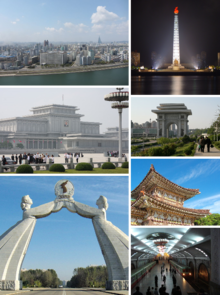

Economy of North Korea
|  | |
| Currency | North Korean won (KPW, ₩) |
|---|---|
| Calendar year | |
Country group |
|
| Statistics | |
| Population | |
| GDP | |
| GDP rank | |
GDP growth | 3.1% (2023) |
GDP per capita | |
GDP per capita rank | |
GDP by sector |
|
| N/A | |
| |
| 17 out of 100 points (2023, 172nd rank) | |
Labour force | |
Labour force by occupation |
|
| Unemployment | |
Main industries | Military products, machine building, chemicals, mining (coal, iron ore, limestone, magnesite, graphite, copper, zinc, lead, and precious metals), agriculture, metallurgy, textiles, food processing[2] |
| External | |
| Exports | $330 million (2023)[4] |
Export goods | watch components, fake hair, iron alloys, instructional models, tungsten (2019)[2] |
Main export partners | |
| Imports | $2.4 billion (2023)[4] |
Import goods | clothing and apparel, soybean oil, rice, wheat products, clocks/watches (2019)[2] |
Main import partners | |
Gross external debt | $5 billion (2013)[2] |
| Public finances | |
| -0.4% (of GDP) (2007 est.)[2] | |
| Revenues | 3.2 billion (2007)[2] |
| Expenses | 3.3 billion (2007 est.)[2] |
All values, unless otherwise stated, are in US dollars. | |
{kind=link}
The economy of North Korea is a centrally planned economy, following Juche, where the role of market allocation schemes is limited, although increasing.[9][10] As of 2024[update], North Korea continues its basic adherence to a centralized planned economy. With a total gross domestic product of $28.500 billion as of 2016, there has been some economic liberalization, particularly after Kim Jong Un assumed the leadership in 2012, but reports conflict over particular legislation and enactment.[11][12][13][14][15][16] Since the 1990s, informal market activity has increased, which the government has tolerated.[17] These markets are referred to as 'Jangmadang', and were formed as a result of the economic collapse during the 1990s, which made the regime unable to distribute food to its people.[18]
After the start of the COVID-19 pandemic , the government has tightened border control[19] and began major crackdowns on private economic activities[20] with a shift to a state-run monopoly on food sales,[21][22][23] followed by greater centralization of foreign trade,[24][25][26] and the overall control over the economy [27][28]
The collapse of the Eastern Bloc from 1989 to 1992, particularly North Korea's principal source of support, the Soviet Union, forced the North Korean economy to realign its foreign economic relations, including increased economic exchanges with South Korea. China is North Korea's largest trading partner. North Korea's ideology of Juche has resulted in the country pursuing autarky in an environment of international sanctions.[29] While the current North Korean economy is still dominated by state-owned industry and collective farms, foreign investment and corporate autonomy have increased.
North Korea had a similar GDP per capita to its neighbor South Korea from the aftermath of the Korean War until the mid-1970s,[30][31] but had a GDP per capita of less than $2,000 in the late 1990s and early 21st century. For the first time, in 2021, the South Korean Ministry of Unification estimated that the North Korean private sector outgrew the public sector.[10][32][33]
Size of the North Korean economy
[edit]Estimating gross national product in North Korea is a difficult task because of a lack of economic data[34] and the problem of choosing an appropriate rate of exchange for the North Korean won, the nonconvertible North Korean currency. The South Korean government's estimate placed North Korea's GNP in 1991 at US$22.9 billion, or US$1,038 per capita. In contrast, South Korea posted US$237.9 billion of GNP and a per capita income of US$5,569 in 1991. North Korea's GNP in 1991 showed a 5.2% decline from 1989, and preliminary indications were that the decline would continue. South Korea's GNP, by contrast, expanded by 9.3% and 8.4%, respectively, in 1990 and 1991.[29]
It is estimated that North Korea's GNP nearly halved between 1990 and 1999.[35] North Korean annual budget reports suggest state income roughly tripled between 2000 and 2014.[36] By about 2010, external trade had returned to 1990 levels.[37]
The South Korea-based Bank of Korea estimated that over 2000 to 2013 average growth was 1.4% per year.[38] It has published the following estimates of North Korea's GDP growth:[39]
| Year | GDP
(in Bil. KR₩ nominal) |
GNI per capita
(in KR₩ nominal) |
GDP growth
(real) |
Ref. |
|---|---|---|---|---|
| 1990 | ||||
| 1995 | ||||
| 1999 | ||||
| 2000 | ||||
| 2001 | ||||
| 2002 | ||||
| 2003 | ||||
| 2004 | ||||
| 2005 | ||||
| 2006 | 1,058,000 | |||
| 2007 | [40] | |||
| 2008 | [41] | |||
| 2009 | 28,483.5 | [42] | ||
| 2010 | [43] | |||
| 2011 | [44] | |||
| 2012 | [45] | |||
| 2013 | [46] | |||
| 2014 | [47] | |||
| 2015 | [48] | |||
| 2016 | [49] | |||
| 2017 | [50] | |||
| 2018 | [51] | |||
| 2019 | [52] | |||
| 2020 | [53] | |||
| 2021 | [54] | |||
| 2022 | [55] | |||
| 2023 | [4] |
This analysis converts production volume estimates into South Korean prices, so is subject to price changes over time of South Korean goods.[56] According to analyst Andrei Lankov, writing in 2017, a significant number of observers believe that the Bank of Korea is too conservative and the real growth rate is 3–4%.[57][58] North Korea reported that the government budget has been increasing at between 5% and 10% annually from 2007 to 2015. Reported planned capital expenditure, mainly on roads and public buildings, increased by 4.3% in 2014, 8.7% in 2015 to 13.7% in 2016.[59] According to a North Korea economist, the growth rate was 3.7% in 2017, lifting GDP to $29.6 billion in 2018.[60] The Australian government estimated 1.3% growth in 2017, while the South Korean government estimated −3.5%.
In 2018, North Korea's government budget revenue plan overfulfilled 1.4%, an increase of 4.6% over 2017 year.[61]
History
[edit]Colonial period and post Second World War
[edit]Beginning in the mid-1920s, the Japanese colonial administration in Korea concentrated its industrial-development efforts in the comparatively under-populated and resource-rich northern portion of the country, resulting in a considerable movement of people northward from the agrarian southern provinces of the Korean Peninsula.[62]
This trend did not reverse until after the end in 1945 of the Second World War, when more than 2 million Koreans moved from North to South following the division of Korea into Soviet and American military zones of administration. This southward exodus continued after the establishment of the Democratic People's Republic of Korea (North Korea) in 1948 and during the 1950–53 Korean War.[62]
The post-World War II division of the Korean Peninsula resulted in imbalances of natural and human resources, with disadvantages for both the North and the South. In 1945, about 80% of Korean heavy industry was in the North but only 31% of light industry, 37% of agriculture, and 18% of the peninsula's total commerce.[63]
North and South Korea both suffered from the massive destruction caused during the Korean War. Historian Charles K. Armstrong stated that "North Korea had been virtually destroyed as an industrial society".[64] In the years immediately after the war, North Korea mobilized its labour force and natural resources in an effort to achieve rapid economic development. Large amounts of aid from other communist countries, notably the Soviet Union and the People's Republic of China,[64] helped the country achieve a high growth-rate in the immediate postwar period.[65][66]
Early efforts at modernization
[edit].jpg){kind=link}
In 1961, an ambitious seven-year plan was launched to continue industrial expansion and increase living standards, but within three years it became clear this was failing and the plan period was extended to 1970. The failure was due to reduced support from the Soviet Union when North Korea aligned more with China, and military pressure from the U.S. leading to increased defense spending. In 1965, South Korea's rate of economic growth first exceeded North Korea's in most industrial areas, though South Korea's per capita GNP remained lower than North Korea's.[67]
In 1979, North Korea renegotiated much of its international debt, but in 1980 it defaulted on its loans except those from Japan. By the end of 1986, hard-currency debt had reached more than US$1 billion. It also owed nearly $2 billion to communist creditors, principally the Soviet Union. The Japanese declared North Korea in default. By 2000, taking into account penalties and accrued interest, North Korea's debt was estimated at $10–12 billion.[68] By 2012, North Korea's external debt had grown to an estimated US$20 billion despite Russia reportedly writing off about $8 billion of debt in exchange for participation in natural resources development. Besides Russia, major creditors included Hungary, the Czech Republic and Iran.[69]
Largely because of these debt problems and because of a prolonged drought and mismanagement, North Korea's industrial growth slowed, and per capita GNP fell below that of the South. By the end of 1979 per capita GNP in North Korea was about one-third of that in the South.[70] The causes for this relatively poor performance are complex, but a major factor is the disproportionately large percentage of GNP (possibly as much as 25%) that North Korea devotes to the military.
There were minor efforts toward relaxing central control of the economy in the 1980s that involve industrial enterprises. Encouraged by Kim Jong Il's call to strengthen the implementation of the independent accounting system (독립채산제, tongnip ch'aesanje) of enterprises in March 1984, interest in enterprise management and the independent accounting system increased, as evidenced by increasing coverage of the topic in North Korean journals.[70] Under the system, factory managers still are assigned output targets but are given more discretion in decisions about labour, equipment, materials, and funds.[29]
In addition to fixed capital, each enterprise is allocated a minimum of working capital from the state through the Central Bank and is required to meet operating expenses with the proceeds from sales of its output. Up to 50% of the "profit" is taxed, the remaining half being kept by the enterprise for purchase of equipment, introduction of new technology, welfare benefits, and bonuses.[71] As such, the system provides some built-in incentives and a degree of micro-level autonomy, unlike the budget allocation system, under which any surplus is turned over to the government in its entirety.[29]
Another innovation, the August Third People's Consumer Goods Production Movement, is centred on consumer goods production. This measure was so named after Kim Jong Il made an inspection tour of an exhibition of light industrial products held in Pyongyang on August 3, 1984. The movement charges workers to use locally available resources and production facilities to produce needed consumer goods. On the surface, the movement does not appear to differ much from the local industry programs in existence since the 1960s, although some degree of local autonomy is allowed. However, a major departure places output, pricing, and purchases outside central planning. In addition, direct sales stores were established to distribute goods produced under the movement directly to consumers. The movement is characterized as a third sector in the production of consumer goods, alongside centrally controlled light industry and locally controlled traditional light industry. Moreover, there were some reports in the mid-1980s of increasing encouragement of small-scale private handicrafts and farm markets. As of 1992[update], however, no move was reported to expand the size of private garden plots.[29]
All these measures appear to be minor stop-gap measures to alleviate severe shortages of consumer goods by infusing some degree of incentives. In mid-1993, no significant moves signalling a fundamental deviation from the existing system had occurred. The reluctance to initiate reform appears to be largely political. This concern is based on the belief that economic reform will produce new interests that will demand political expression and that demands for the institutionalization of such pluralism eventually will lead to political liberalization.[29]
Beginning in the mid-1980s and particularly around the end of the decade, North Korea slowly began to modify its rigid self-reliant policy. The changes, popularly identified as the open-door policy, included an increasing emphasis on foreign trade, a readiness to accept direct foreign investment by enacting a joint venture law, the decision to open the country to international tourism, and economic cooperation with South Korea.
The main targets of the Third Seven-Year Plan of 1987–1993 were to achieve the "Ten Long-Range Major Goals of the 1980s for the Construction of the Socialist Economy". These goals, conceived in 1980, were to be fulfilled by the end of the decade. The fact that these targets were rolled over to the end of the Third Seven-Year Plan is another indication of the disappointing economic performance during the Second Seven-Year Plan. The three policy goals of self-reliance, modernization, and scientification were repeated. Economic growth was set at 7.9% annually, lower than the previous plan. Although achieving the ten major goals of the 1980s was the main thrust of the Third Seven-Year Plan, some substantial changes have been made in specific quantitative targets. For example, the target for the annual output of steel was reduced by a third: from 15 million tons to 10 million tons. The output targets of cement and non-ferrous metals—two major export items—have been increased significantly. The June 1989 introduction of the Three-Year Plan for Light Industry as part of the Third Seven-Year Plan is intended to boost the standard of living by addressing consumer needs.[29]
The Third Seven-Year Plan gave a great deal of attention to developing foreign trade and joint ventures, the first time a plan has addressed these issues. By the end of 1991, however, two years before the termination of the plan, no quantitative plan targets were made public, an indication that the plan has not fared well.[original research?] The diversion of resources to build highways, theatres, hotels, airports, and other facilities to host the Thirteenth World Festival of Youth and Students in July 1989 must have had a negative impact on industrial and agricultural development, although the expansion and improvement of social infrastructure have resulted in some long-term economic benefits.[29]
State Planning Commission
[edit]Although general economic policy objectives are decided by the Central People's Committee (CPC), it is the task of the State Planning Committee to translate the broad goals into specific annual and long-term development plans and quantitative targets for the economy as a whole, as well as for each industrial sector and enterprise. Under the basic tenets of the 1964 reforms, the planning process is guided by the principles of "unified planning" (일원화, ilwŏnhwa) and of "detailed planning" (새분화, saebunhwa).[29]
Under "unified planning", regional committees are established in each province, city, and county to systematically coordinate planning work. These committees do not belong to any regional organization and are directly supervised by the State Planning Committee. As a result of a reorganization in 1969, they are separated into provincial planning committees, city/county committees, and enterprise committees (for large-scale enterprises).[29]
The planning committees, under the auspices of the State Planning Committee, coordinate their work with the planning offices of the economy-related government organizations the corresponding regional and local areas. The system attempts to enable the regional planning staff to better coordinate with economic establishments in their areas, which are directly responsible to them in planning, as well as communicating directly with staff at the CPC. "Detailed planning" seeks to construct plans with precision and scientific methods based on concrete assessment of the resources, labour, funds, plant capacities, and other necessary information.[29]
{kind=link}
There are four stages in drafting the final national economic plan.[29]
- The first is collecting and compiling preliminary statistical data. These figures, which are used as the basic planning data on the productive capacities of economic sectors, originally are prepared by lower-level economic units and aggregated on a national level by respective departments and committees. Simultaneously, the regional, local, and enterprise planning committees prepare their own data and forward them to the CPC. Through this two-channel system of simultaneous, separate, and independent preparation of statistical data by economic units and planning committees, the government seeks to ensure an accurate, objective, and realistic data base unfettered by local and bureaucratic bias.[29]
- The second stage is preparing the control figures by the CPC based on the preliminary data in accordance with the basic plan goals presented by the Central People's Committee.[29]
- In the third stage, a draft plan is prepared. The draft plan, prepared by the CPC, is the result of coordinating all draft figures submitted by the lower-level economic units, which, in turn, base their drafts on the control figures handed down from the committee.[29]
- In the fourth stage, the CPC submits a unified national draft plan to the Central People's Committee and the State Administration Council for confirmation. After approval by the Supreme People's Assembly, the draft becomes final and is distributed to all economic units and regional and local planning committees.[29]
The plan then becomes legal and compulsory. Frequent directives from the central government contain changes in the plan targets or incentives for meeting the plan objectives.[29]
Although the central government is most clearly involved in the formulation and evaluation of the yearly and long-term plans, it also reviews summaries of quarterly or monthly progress. Individual enterprises divide the production time into daily, weekly, ten-day, monthly, quarterly, and annual periods. In general, the monthly plan is the basic factory planning period.[29]
The success of an economic plan depends on the quality and detail of information received, the establishment of realistic targets, coordination among sectors, and correct implementation. High initial growth during the Three-Year Plan and, to a lesser extent, during the Five-Year Plan contributed to a false sense of confidence among the planners. Statistical over reporting—an inherent tendency in an economy where rewards lie in fulfilling the quantitative targets, particularly when the plan target year approaches—leads to overestimation of economic potential, poor product quality, and eventually to plan errors. Inefficient use of plants, equipment, and raw materials add to planning errors. Lack of coordination in planning and production competition among sectors and regions cause imbalances and disrupt input-output relationships. The planning reforms in 1964 were supposed to solve these problems, but the need for correct and detailed planning and strict implementation of plans was so great that their importance was emphasized in the report unveiling the Second Seven-Year Plan, indicating that planning problems persisted in the 1980s.[29]
In the mid-1990s, North Korea abandoned firm directive planning, and multi-year plans became more of a long-term economic strategy.[72][73]
Ch'ŏngsan-ni Method
[edit]The Ch'ŏngsan-ni Method (청산리방법) of management was born out of Kim Il Sung's February 1960 visit to the Ch'ŏngsan-ni Cooperative Farm in South P'yŏngan Province. Influenced by Mao Zedong's Great Leap Forward Policy, Kim and other members of the KWP Central Committee offered "on-the-spot guidance" (현지지도, hyŏnji chido) and spent two months instructing and interacting with the workers. The avowed objective of this new method is to combat "bureaucratism" and "formalism" in the farm management system.[29]
The leadership claimed that farm workers were unhappy and produced low output because low-ranking functionaries of the Workers' Party of Korea (who expounded abstract Marxist theories and slogans) were using tactics that failed to motivate. To correct this, the leadership recommended that the workers receive specific guidance in solving production problems and be promised readily available material incentives. The Ch'ŏngsan-ni Method called for high-ranking party officials, party cadres, and administrative officials to emulate Kim Il Sung by making field inspections. The system provided opportunities for farmers to present their grievances and ideas to leading cadres and managers.[29]
Perhaps more important than involving administrative personnel in on-site inspections was the increased use of material incentives, such as paid vacations, special bonuses, honorific titles, and monetary rewards. In fact, the Ch'ŏngsan-ni Method appeared to accommodate almost any expedient to spur production. The method, subsequently, was undercut by heavy-handed efforts to increase farm production and amalgamate farms into ever-larger units. Actual improvement in the agricultural sector began with the adoption of the subteam contract system as a means of increasing peasant productivity by adjusting individual incentives to those of the immediate, small working group. Thus the increasing scale of collective farms was somewhat offset by the reduction in the size of the working unit. "On-the-spot guidance" by high government functionaries, however, continued in the early 1990s, as exemplified by Kim Il Sung's visits to such places as the Wangjaesan Cooperative Farm in Onsŏng County and the Kyŏngsŏn Branch Experimental Farm of the Academy of Agricultural Sciences between August 20 and 30, 1991.[29] Kim Jong Il carried on the tradition, despite having refused to do so before, and even expanded it to the Korean People's Army. Today, Kim Jong Un continues the practices of the method.
Taean work system
[edit]The industrial management system developed in three distinct stages. The first was a period of enterprise autonomy that lasted until December 1946. The second stage was a transitional system based on local autonomy, with each enterprise managed by the enterprise management committee under the direction of the local people's committee. This system was replaced by the "one-man management system" (지배인 단독 책임제), with management patterned along Soviet lines as large enterprises were nationalized and came under central control. The third stage, the Taean Work System (대안의 사업체계, Taeanŭi saŏpch'e), was introduced in December 1961 as an application and refinement of agricultural management techniques to industry. The Taean industrial management system grew out of the Ch'ŏngsan-ni Method.[29]: 123–127
The highest managerial authority under the Taean system is the party committee. Each committee has approximately 25 to 35 members elected from the ranks of managers, workers, engineers, and the leadership of "working people's organizations" at the factory. A smaller "executive committee", about one-quarter the size of the regular committee, has practical responsibility for day-to-day plant operations and major factory decisions. The most important staff members, including the party committee secretary, factory manager, and chief engineer, make up its membership. The system focuses on co-operation among workers, technicians, and party functionaries at the factory level.[29]: 123–127
Each factory has two major lines of administration, one headed by the manager, the other by the party committee secretary. A chief engineer and his or her assistants direct a general staff in charge of all aspects of production, planning, and technical guidance. Depending on the size of the factory, varying numbers of deputies oversee factory logistics, marketing, and workers' services. The supply of materials includes securing, storing, and distributing all materials for factory use, as well as storing finished products and shipping them from the factory.[29]: 123–127
Deputies are assigned workers to their units and handle factory accounts and payroll. Providing workers' services requires directing any farming done on factory lands, stocking factory retail shops, and taking care of all staff amenities. Deputies in charge of workers' services are encouraged to meet as many of the factory's needs as possible using nearby agricultural cooperatives and local industries.[29]: 123–127
The secretary of the party committee organizes all political activities in each of the factory party cells and attempts to ensure loyalty to the party's production targets and management goals. According to official claims, all management decisions are arrived at by consensus among the members of the party committee. Given the overwhelming importance of the party in the country's affairs, it seems likely that the party secretary has the last say in any major factory disputes.[29]: 123–127
The Taean system heralded a more rational approach to industrial management than that practised previously. Although party functionaries and workers became more important to management under the new system, engineers and technical staff received more responsibility in areas where their expertise could contribute the most. The system recognizes the importance of material as well as "politico-moral" incentives for managing the factory workers. The "internal accounting system", a spin-off of the "independent accounting system", grants bonuses to work teams and workshops that use raw materials and equipment most efficiently. These financial rewards come out of enterprise profits.[29]: 123–127
A measure of the success of the Taean work system is its longevity and its continued endorsement by the leadership.[29]: 123–127 In his 1991 New Year's address marking the 13th anniversary of the creation of the system, Kim Il Sung said that the
Taean work system is the best system of economic management. It enables the producer masses to fulfill their responsibility and role as masters and to manage the economy in a scientific and rational manner by implementing the mass line in economic management, and by combining party leadership organically with administrative, economic, and technical guidance.[29]: 123–127
Mass production campaigns
[edit]Parallel to management techniques such as the Ch'ŏngsan-ni Method and the Taean work system, which were designed to increase output in more normalized and regularized operations of farms and enterprises, the leadership continuously resorts to exhortations and mass campaigns to motivate the workers to meet output targets. The earliest and the most pervasive mass production campaign was the Ch'ŏllima Movement. Introduced in 1958 and fashioned after China's Great Leap Forward (1958–1960), the Ch'ŏllima Movement organized the labour force into work teams and brigades to compete at increasing production. The campaign was aimed at industrial and agricultural workers and at organizations in education, science, sanitation and health, and culture.[29]: 123–127
In addition to work teams, units eligible for Ch'ŏllima citations included entire factories, factory workshops, and such self-contained units as a ship or a railroad station. The "socialist emulation" among the industrial sectors, enterprises, farms, and work teams under the Ch'ŏllima Movement frantically sought to complete the First Five-Year Plan (1957–1960) but instead created chaotic disruptions in the economy. This made it necessary to set aside 1959 as a "buffer year" to restore balance in the economy.[29]: 123–127
Although the Ch'ŏllima Movement was replaced in the early 1960s by the Ch'ŏngsan-ni Method and the Taean Work System, the regime's reliance on mass campaigns continued into the early 1990s. Campaigns conducted after the Ch'ŏllima to speed battles toward the end of a period (such as a month, a year, or an economic plan) to reach production targets to carry out the economic goals of the decade.[29]: 123–127
Efforts at modernization since 1991
[edit]Following the collapse of the Soviet Union in 1991, the principal source of external support, North Korea announced in December 1993 a three-year transitional economic policy placing primary emphasis on agriculture, light industry, and foreign trade. However, lack of fertilizer, natural disasters, and poor storage and transportation practices caused the country to fall more than a million tons per year short of grain self-sufficiency.[74][75] Moreover, lack of foreign exchange to purchase spare parts and oil for electricity generation left many factories idle.[76]
The shortage of foreign exchange because of a chronic trade deficit, a large foreign debt, and dwindling foreign aid has constrained economic development. In addition, North Korea has been diverting scarce resources from developmental projects to defence; it spent more than 20% of GNP on defence toward the end of the 1980s, a proportion among the highest in the world. These negative factors, compounded by the declining efficiency of the central planning system and the failure to modernize the economy, have slowed the pace of growth since the 1960s. The demise of the socialist republics in the Soviet Union and East European countries—North Korea's traditional trade partners and benefactors—has compounded the economic difficulties in the early 1990s.[29]
Economically, the collapse of the Soviet Union and the end of Soviet support to North Korean industries caused a contraction of the North Korea's economy by 25% during the 1990s. While, by some accounts, North Korea had a higher per capita income than South Korea in the 1970s, by 2006 its per capita income was estimated to be only $1108, one seventeenth that of South Korea.[77]
Experimentation in small scale entrepreneurship took place from 2009 to 2013, and although there continue to be legal uncertainties this has developed into a significant sector.[78] By 2016 economic liberalisation had progressed to the extent that both locally-responsible and state industrial enterprises gave the state 20% to 50% of their output, selling the remainder to buy raw materials at market-based prices akin to a free market.[72]
In 2014, the Enterprise Act was amended to allow state-owned enterprise managers to engage in foreign trade and joint ventures, and to accept investment from non-government domestic sources. Under the new rules the enterprise director became more like the western chief executive officer, and the chief engineer had an operational role more like a western chief operating officer. As of 2017 it was unclear if the Taean Work System (described above) still in practice operated to give local people's committees much influence.[79]
In 2017, Dr. Mitsuhiro Mimura, Senior Research Fellow at Japan's Economic Research Institute for Northeast Asia, who has visited North Korea 45 times, described it as the "poorest advanced economy in the world", in that while having comparatively low GDP, it had built a sophisticated production environment. He described the recent rise of entrepreneurial groups through "socialist cooperation", where groups of individuals could start small enterprises as cooperative groups. Managers in state-owned industries or farms were also free to sell or trade production beyond state plan targets, providing incentives to increase production. Managers could also find investment for expansion of successful operations, in a process he called "socialist competition". A state plan was still the basis for production, but was more realistic leaving room for excess production.[16]
Budget and finance
[edit]{kind=link}
{kind=link}
The state budget is a major government instrument in carrying out the country's economic goals.[80] Expenditures represented about three-quarters of GNP in the mid-1980s, the allocation of which reflected the priorities assigned to different economic sectors.[80] Taxes were abolished in 1974 as "remnants of an antiquated society". This action, however, was not expected to have any significant effect on state revenue because the overwhelming proportion of government funds—an average of 98.1% during 1961–1970—was from turnover (sales) taxes, deductions from profits paid by state enterprises, and various user fees on machinery and equipment, irrigation facilities, television sets, and water.[80]
In order to provide a certain degree of local autonomy as well as to lessen the financial burden of the central government, a "local budget system" was introduced in 1973. Under this system, provincial authorities are responsible for the operating costs of institutions and enterprises not under direct central government control, such as schools, hospitals, shops, and local consumer goods production. In return, they are expected to organize as many profitable ventures as possible and to turn over profits to the central government.[29]
Around December of every year, the state budget for the following calendar year is drafted, subject to revision around March. Typically, total revenue exceeds expenditure by a small margin, with the surplus carried over to the following year. The largest share of state expenditures goes to the "people's economy", which averaged 67.3% of total expenditures between 1987 and 1990, followed in magnitude by "socio-cultural", "defense", and "administration".[29]
Defense spending, as a share of total expenditures, has increased significantly since the 1960s: from 3.7% in 1959 to 19% in 1960, and, after averaging 19.8% between 1961 and 1966, to 30.4% in 1967. After remaining around 30% until 1971, the defense share decreased abruptly to 17% in 1972, and continued to decline throughout the 1980s. Officially, in both 1989 and 1990 the defense share remained at 12%, and for 1991 it was 12.3% with 11.6% planned for 1992. The declining trend was consistent with the government's announced intentions to stimulate economic development and increase the social benefits. However, Western experts have estimated that actual military expenditures are higher than budget figures indicate.[29]
In the 1999 budget, expenditures for the farming and power sectors were increased by 15% and 11%, respectively, compared with those of 1998.
In the 2007 budget, it was estimated an increase in revenue at 433.2bn won ($3.072bn, $1 = 141 won). In 2006, 5.9% were considered the public revenue, whereas this year, this figure was raised to 7.1%.
North Korea claims that it is the only state in the world that does not levy taxes. Taxes were abolished beginning on April 1, 1974.[81]
Bonds
[edit]Since 2003, North Korean authorities issue government bonds called The "People's Life Bonds",[82] and promoted the slogan "Buying bonds is patriotic".
North Korea sold bonds internationally in the late 1970s for 680 million Deutsche marks and 455 million Swiss francs. North Korea defaulted on these bonds by 1984, although the bonds remain traded internationally on speculation that the country would eventually perform on the obligations.[83]
The latest trends
[edit]The Sydney Morning Herald reported that Kim's previous propaganda has shifted focus toward patriotism and the economy, and improving its relationships with China, South Korea, and the United States. The state-run television promoted a song of praise to the National flag by airing videos with images that included the flag being raised September 2018, during mass games events, marking North Korea's 70th anniversary. In the video, brief images of troops, fighter jets releasing blue, red, and white smoke, scattered pictures of civilians, new high-rise apartments in the capital, fireworks displays, and even students in their school uniforms can all be seen at the same event.[84]
The South China Morning Post, in a 2019 article, stated that already there is also some economical and cultural revolution happening recently within North Korea itself. It started in earnest in February 2018, during the Pyeongchang Winter Olympic Games, when top musicians from North Korea were sent to perform in South Korea. This included a female quintet who performed in black shorts and red tops. After two months, Supreme Leader Kim Jong Un saw the performance of South Korean girl group, Red Velvet. This is the first ever K-pop show to be held in Pyongyang. The North Korean musicians that performed in South Korea were highly praised for their performance that leader Kim decided to send them to Beijing for another goodwill tour in January 2019. Part of the revolution was the introduction of other cultures, including Western, which was previously believed to be vulgar and quite corrupt in the past, but is now slowly making its way to the North Korean people. Second-hand Harry Potter books can now be read at the National Library, and Bollywood films like the Three Idiots had just had a run in their cinemas. The changes have also found their way to the economic sector with factories that are also producing products that are associated more with the West, like Air Jordan shoes, for national consumption. [85]
Per the amendments made to the Constitution in 2019, the former economic methods of management, Ch'ŏngsan-ni in agriculture and Taean in the industries, were now phased out altogether.
After the 8th Party Congress, Kim Byung-yeon of the Seoul National University said that, between 2017 and 2019, the North Korean GDP decreased by 10% and, in 2020, the North Korean GDP decreased by 5%.
Economic sectors
[edit]Manufacturing
[edit].jpg){kind=link}
North Korea also implements planned economy in industry. The government will provide fuel and materials for a factory, while the factory will manufacture products and quantities according to the government's requirements.
North Korea's self-reliant development strategy assigned top priority to developing heavy industry, with parallel development in agriculture and light industry. This policy was achieved mainly by giving heavy industry preferential allocation of state investment funds. More than 50% of state investment went to the industrial sector during the 1954–1976 period (47.6%, 51.3%, 57.0%, and 49.0%, respectively, during the Three-Year Plan, Five-Year Plan, First Seven-Year Plan, and Six-Year Plan). As a result, gross industrial output grew rapidly.[29]: 123–127
As was the case with the growth in national output, the pace of growth has slowed markedly since the 1960s. The rate declined from 41.7% and 36.6% a year during the Three-Year Plan and Five-Year Plan, respectively, to 12.8%, 16.3%, and 12.2%, respectively, during the First Seven Year Plan, Six-Year Plan, and Second Seven-Year Plan. As a result of faster growth in industry, that sector's share in total national output increased from 16.8% in 1946 to 57.3% in 1970. Since the 1970s, industry's share in national output has remained relatively stable. From all indications, the pace of industrialization during the Third Seven-Year Plan up to 1991 is far below the planned rate of 9.6%. In 1990 it was estimated that the industrial sector's share of national output was 56%.[29]: 123–127
Industry's share of the combined total of gross agricultural and industrial output climbed from 28% in 1946 to well over 90% in 1980. Heavy industry received more than 80% of the total state investment in industry between 1954 and 1976 (81.1%, 82.6%, 80%, and 83%, respectively, during the Three-Year Plan, Five-Year Plan, First Seven-Year Plan, and Six-Year Plan), and was overwhelmingly favored over light industry.[29]
North Korea claims to have fulfilled the Second Seven-Year Plan (1978–1984) target of raising the industrial output in 1984 to 120% of the 1977 target, equivalent to an average annual growth rate of 12.2%. Judging from the production of major commodities that form the greater part of industrial output, however, it is unlikely that this happened. For example, the increase during the 1978–1984 plan period for electric power, coal, steel, metal-cutting machines, tractors, passenger cars, chemical fertilizers, chemical fibers, cement, and textiles, respectively, was 78%, 50%, 85%, 67%, 50%, 20%, 56%, 80%, 78%, and 45%.[29]: 123–127 Raw materials were in short supply and so were energy and hard currency. Infrastructure decayed and machinery became obsolete. Unlike other socialist countries in the Eastern Bloc, North Korea kept planning in a highly centralized manner and refused to liberalize economic management.
{kind=link}
In the mid-1980s, the speculation that North Korea would emulate China in establishing Chinese-style special economic zones was flatly denied by then deputy chairman of the Economic Policy Commission Yun Ki-pok (Yun became chairman as of June 1989). China's special economic zones typically are coastal areas established to promote economic development and the introduction of advanced technology through foreign investment. Investors are offered preferential tax terms and facilities. The zones, which allow greater reliance on market forces, have more decision-making power in economic activities than do provincial-level units. Over the years, China has tried to convince the North Korean leadership of the advantages of these zones by giving tours of the various zones and explaining their values to visiting high-level officials.[29]
In April 1982, Kim Il Sung announced a new economic policy giving priority to increased agricultural production through land reclamation, development of the country's infrastructure—especially power plants and transportation facilities—and reliance on domestically produced equipment. There also was more emphasis on trade.
In September 1984, North Korea promulgated a joint venture law to attract foreign capital and technology. The new emphasis on expanding trade and acquiring technology was not, however, accompanied by a shift in priorities away from support of the military. In 1991, North Korea announced the creation of a Special Economic Zone (SEZ) in the northeast regions of Rason (Rason Special Economic Zone) and Ch'ŏngjin. Investment in this SEZ has been slow in coming. Problems with infrastructure, bureaucracy, uncertainties about the security of investments, and viability have hindered growth and development. Nevertheless, thousands of small Chinese businesses had set up profitable operations in North Korea by 2011.[86]
A government research center, the Korea Computer Center, was set up in 1990, starting the slow development of an information technology industry.[87]
In 2013 and 2014, the State Economic Development Administration announced a number of smaller special economic zones covering export handling, mineral processing, high technology, gaming and tourism.[88] International conferences on special economic zones took place in 2013 and 2014, and the concept of many provincial economic zones was considered. However from 2019 these possibilities have diminished, partly out of a concern of excessive foreign influence on North Korean society.[89]
Garment industry
[edit]The most successful export industry is the garment industry. Production is by a North Korean firm for a European or other foreign partner, by a Chinese firm operating in North Korea with a North Korean partner, or by North Korean workers working in Chinese or other foreign factories.[90][91] Wages are the lowest in northeastern Asia.[92]
Automotive industry
[edit]{kind=link}
The North Korean motor vehicle production establishes military, industrial and construction goals, with private car ownership by citizens remaining on low demand. Having Soviet origins (the subsequent practice of cloning foreign specimens, and a recent automobile joint-venture), North Korea has developed a wide-range automotive industry with production of all types of vehicles. The basis for production is in urban and off-road minis; luxury cars; SUV cars; small, medium, heavy, and super-heavy cargo; construction and off-road trucks; minibuses/minivans, coach buses, civilian and articulated buses, trolleybuses, and trams. However, North Korea produces far fewer vehicles than its production capability due to the ongoing economic crisis. North Korea has not joined or collaborated with the OICA, or with any other automotive organization, so any critical information about its motor vehicle industry is limited.
Power and energy
[edit]{kind=link}
The energy sector is one of the most serious bottlenecks in the North Korean economy. Since 1990, the supply of oil, coal, and electricity declined steadily, and seriously affected all sectors of the economy. Crude oil was formerly imported by pipeline at "friendship prices" from the former Soviet Union or China, but the withdrawal of Russian concessions and the reduction of imports from China brought down annual imports from about 23 million barrels (3.7×106 m3) in 1988 to less than 4 million barrels (640×103 m3) by 1997. As the imported oil was refined for fuels for transportation and agricultural machinery, a serious cutback in oil imports caused critical problems in transportation and agriculture.
According to statistics compiled by the South Korean agency Statistics Korea based on International Energy Agency (IEA) data, per capita electricity consumption fell from its peak in 1990 of 1247 kilowatt hours to a low of 712 kilowatt hours in 2000. It slowly rose since then to 819 kilowatt hours in 2008, a level below that of 1970.[93][94]
North Korea has no coking coal, but has substantial reserves of anthracite in Anju, Aoji (Ŭndŏk), and other areas. Coal production peaked at 43 million tons in 1989 and steadily declined to 18.6 million tons in 1998. Major causes of coal shortages include mine flooding, and outdated mining technology. As coal was used mainly for industry and electricity generation, decrease in coal production caused serious problems in industrial production and electricity generation. Coal production may not necessarily increase significantly until North Korea imports modern mining technology.[original research?]
Electricity generation of North Korea peaked in 1989 at about 30 TWh. There were seven large hydroelectric plants in the 1980s. Four were along the Yalu River, built with Chinese aid, and supplying power to both countries. In 1989, 60% of electricity generation was hydroelectric and 40% fossil fueled, mostly coal-fired.
In 1997, coal accounted for more than 80% of primary energy consumption and hydro power more than 10%.[citation needed] Net imports of coal represented only about 3% of coal consumption. Hydroelectric power plants generated about 55% of North Korea's electricity and coal-fired thermal plants about 39% in 1997.[95][96] However, with only 20% of the per capita electricity generation of Japan, North Korea suffered from chronic supply shortages. Coal exports to China accounted for a major portion of North Korea's revenue in mid-2010s.[97]
Some hydroelectric facilities were believed to be out of operation due to damage from major flooding in 1995. Coal-fired power plants were running well under capacity, due in part to a serious decline in coal supply and in part to problems with transportation of coal. The electricity supply steadily declined and was 17 TWh in 1998.[citation needed] Transmission losses sit at just under 16% (15.8%) as of 2014.[98]
Construction
[edit].jpg){kind=link}
Construction has been an active sector in North Korea. This was demonstrated not only through large housing programmes, of which most were visible in the high-rise apartment blocks in Pyongyang, but also in the smaller modern apartment complexes widespread even in the countryside. These are dwarfed in every sense by "grand monumental edifices". The same may apply even to apparently economically useful projects such as the Nampo Dam, which cost US$4bn.[99]
The years of economic contraction in the 1990s slowed this sector as it did others; the shell of the 105-story Ryugyŏng Hotel towered unfinished on Pyongyang's skyline for over a decade. The Bank of Korea claims that construction's share of GDP fell by almost one-third between 1992 and 1994, from 9.1% to 6.3%. This accords with a rare official figure[citation needed] of 6% for 1993, when the sector was said to have employed 4.2% of the labour force. However, the latter figure excludes the Korean People's Army, which visibly does much of the country's construction work.[100]
Since about 2012, when 18 tower blocks were built in Pyongyang, a construction boom has taken place in Pyongyang. Major projects include the Mansudae People's Theatre (2012), Munsu Water Park (2013), the modernisation of Pyongyang International Airport (2015) and the Science and Technology Center (2015).[100][58]
Banking
[edit]The Central Bank of North Korea, under the Ministry of Finance, has a network of 227 local branches. Several reissues of banknotes in recent years suggest that citizens are inclined to hoard rather than bank any savings that they make from their incomes; reportedly they now also prefer foreign currency. At least two foreign aid agencies[clarification needed] have recently set up microcredit schemes, lending to farmers and small businesses.[citation needed]
In late 2009, North Korea revalued its currency, effectively confiscating all privately held money above the equivalent of US$35 per person.[101] The revaluation effectively wiped out the savings of many North Koreans. Days after the revaluation the won dropped 96% against the United States dollar.[102] Pak Nam-gi, the director of the Planning and Finance Department of North Korea's ruling Workers' Party, was blamed for the disaster and later executed in 2010.[103]
{kind=link}
In 2004 and 2006 laws were passed to codify rules for savings and commercial banking. However it was not until 2012 that North Korean banks started to seriously compete for retail customers. Competing electronic cash cards have become widely accepted in Pyongyang and other cities, but are generally not linked to bank accounts. North Korean banks have introduced retail products which permit a mobile phone app to make payments and top-ups.[104][9]
As of May 2013, the Chinese banks, China Merchants Bank,[105] Industrial and Commercial Bank of China, China Construction Bank, and Agricultural Bank of China, stopped "all cross-border cash transfers, regardless of the nature of the business" with North Korea.[106] The Bank of China, the China's primary institution for foreign exchange transactions, said, on May 14, 2013, that "it had closed the account of Foreign Trade Bank, North Korea's main foreign exchange bank".[106][107] However, "smaller banks based in northeastern China across the border from North Korea said it was still handling large-scale cross-border transfers." For example, the Bank of Dalian branch in Dandong was still doing transfers to North Korea.[106]
Kim Jong Un from 2015 has sought to enlarge and reform the banking sector, to assist economic growth, with credit cards viewed as a way to increase money circulation. The concept of socialist commercial banks is being developed to utilize "idle funds" effectively, including the savings of individuals, to promote economic growth.[108]
Retail
[edit]{kind=link}
Until the early 2000s the official retail sector was mainly state-controlled,[109] under the direction of the People's Services Committee. Consumer goods were few and of poor quality, with most provided on a ration basis. There were state-run stores and direct factory outlets for the masses, and special shops with luxuries for the elite—as well as a chain of hard-currency stores (a joint venture with the association of pro-Pyongyang Korean residents in Japan, the Ch'ongryŏn), with branches in large cities.
In 2002 and in 2010, private markets were progressively legalized, mostly for food sales.[110] As of 2013, urban and farmer markets were held every 10 days, and most urban residents lived within 2 km of a market.[111] Since the 2009 economic intervention, it is common for North Korean citizens to make purchases with Chinese yuan and United States dollars.[112]
In 2012, the third large shopping mall in Pyongyang, the Kwangbok Area Shopping Center, opened.[9][113] In 2014 the construction of another large shopping mall started.[114] As of 2017, these malls sold competing brands of goods, for example at least ten different kinds of toothpaste were being sold.[9]
In 2017, the Korea Institute for National Unification estimated there were 440 government-approved markets employing about 1.1 million people.[58]
in 2021 major crackdowns began with the start of the COVID pandemic and a shift to a state-run monopoly on food sales with measures to ensure that food would pass through state-run grain shops, a network of which the government had been building since 2019. The shops monopolized the sale and distribution [115]
Tourism
[edit]Food
[edit]Agriculture
[edit]{kind=link}
North Korea's sparse agricultural resources limit agricultural production. Climate, terrain, and soil conditions are not particularly favorable for farming,[29] with a relatively short cropping season. Only about 17% of the total landmass, or approximately 20,000 km2, is arable, of which 14,000 km2 is well suited for cereal cultivation;[111] the major portion of the country is rugged mountain terrain.[29]
The weather varies markedly according to elevation, and lack of precipitation, along with infertile soil, makes land at elevations higher than 400 meters unsuitable for purposes other than grazing. Precipitation is geographically and seasonally irregular, and in most parts of the country as much as half the annual rainfall occurs in the three summer months. This pattern favors the cultivation of paddy rice in warmer regions that are outfitted with irrigation and flood control networks.[29] Rice yields are 5.3 tonnes per hectare, close to international norms.[116] In 2005, North Korea was ranked by the FAO as an estimated 10th in the production of fresh fruit[117] and as an estimated 19th in the production of apples.[118]
Farming is concentrated in the flatlands of the four west coast provinces, where a longer growing season, level land, adequate rainfall, and good irrigated soil permit the most intensive cultivation of crops. A narrow strip of similarly fertile land runs through the eastern seaboard Hamgyŏng provinces and Kangwŏn Province, but the interior provinces of Chagang and Ryanggang are too mountainous, cold, and dry to allow much farming. The mountains contain the bulk of North Korea's forest reserves while the foothills within and between the major agricultural regions provide lands for livestock grazing and fruit tree cultivation.[29]
Since self-sufficiency remains an important pillar of North Korean ideology, self-sufficiency in food production is deemed a worthy goal. Another aim of government policies—to reduce the gap between urban and rural living standards—requires continued investment in the agricultural sector. The stability of the country depends on steady, if not rapid, increases in the availability of food items at reasonable prices. In the early 1990s, there were severe food shortages.[29][119][120]
{kind=link}
The most far-reaching statement on agricultural policy is embodied in Kim Il Sung's 1964 Theses on the Socialist Agrarian Question in Our Country, which underscores the government's concern for agricultural development.[121] Kim emphasized technological and educational progress in the countryside as well as collective forms of ownership and management. As industrialization progressed, the share of agriculture, forestry, and fisheries in the total national output declined from 63.5% and 31.4%, respectively, in 1945 and 1946, to a low of 26.8% in 1990. Their share in the labor force also declined from 57.6% in 1960 to 34.4% in 1989.[29]
In the 1990s, the decreasing ability to carry out mechanized operations (including the pumping of water for irrigation), as well as lack of chemical inputs, was clearly contributing to reduced yields and increased harvesting and post-harvest losses.[111]
Incremental improvements in agricultural production have been made since the late 1990s, bringing North Korea close to self-sufficiency in staple foods by 2013. In particular, rice yields have steadily improved, though yields on other crops have generally not improved. The production of protein foods remains inadequate. Access to chemical fertilizer has declined, but the use of compost and other organic fertilizer has been encouraged.[111][116]
Fisheries
[edit]North Korean fisheries export seafood, primarily crab, to Dandong, Liaoning, illicitly.[122] Crabs, clams and conches from the Yellow Sea waters of North Korea are popular in China, possibly because the less salty water improves taste.[122]
Food distribution system
[edit]Since the 1950s, a majority of North Koreans have received their food through the public distribution system (PDS). The PDS requires farmers in agricultural regions to hand over a portion of their production to the government and then reallocates the surplus to urban regions, which cannot grow their own foods. About 70% of the North Korean population, including the entire urban population, receives food through this government-run system.[111]
Before the floods, recipients were generally allotted 600–700 grams per day while high officials, military men, heavy laborers, and public security personnel were allotted slightly larger portions of 700–800 grams per day.[123] As of 2013, the target average distribution was 573 grams of cereal equivalent per person per day, but varied according to age, occupation, and whether rations are received elsewhere (such as school meals).[111] However, as of 2019, this number has been reduced to 312 grams per day according to an investigation conducted by the United Nations between March 29 and April 12.[124]
Decreases in production affected the quantity of food available through the public distribution system. Shortages were compounded when the North Korean government imposed further restrictions on collective farmers. When farmers, who had never been covered by the PDS, were mandated by the government to reduce their own food allotments from 167 kilograms to 107 kilograms of grain per person each year, they responded by withholding portions of the required amount of grain. By 2008, the system had significantly recovered, and, from 2009 to 2013, daily per person rations averaged at 400 grams per day for much of the year, though in 2011 it dropped to 200 grams per day from May to September.[111]
It is estimated that in the early 2000s, the average North Korean family drew some 80% of its income from small businesses that were technically illegal (though unenforced) in North Korea. In 2002 and in 2010, private markets were progressively legalized.[110] As of 2013, urban and farmer markets were held every 10 days, and most urban residents lived within 2 km of a market, with markets having an increasing role in obtaining food.[111]
Crisis and famine
[edit]From 1994 to 1998, North Korea suffered a famine. Since North Korea is a closed country, the number of specific deaths in the incident is difficult to know. According to different literature, the starved or malnourished death toll is estimated to be between 240,000 and 480,000. Since 1998 there has been a gradual recovery in agriculture production, which by 2013 brought North Korea back close to self-sufficiency in staple foods. However, as of 2013, most households have borderline or poor food consumption, and consumption of protein remains inadequate.[111]
In the 1990s, the North Korean economy saw stagnation turning into crisis. Economic assistance received from the Soviet Union and China was an important factor of its economic growth. Upon its collapse in 1991, the Soviet Union withdrew its support and demanded payment in hard currency for imports. China stepped in to provide some assistance and supplied food and oil, most of it reportedly at concessionary prices.[citation needed] The North Korean economy was undermined and its industrial output began to decline in 1990. Deprived of industrial inputs, including fertilizers, pesticides, and electricity for irrigation, agricultural output also started to decrease even before North Korea had a series of natural disasters in the mid-1990s. This evolution, combined with a series of natural disasters including record floods in 1995, caused one of the worst economic crises in North Korea's history. Other causes of this crisis were high defense spending (about 25% of GDP) and bad governance.
In December 1991, North Korea established a "zone of free economy and trade" to include the northeastern port cities of Unggi (Sŏnbong), Ch'ŏngjin, and Najin. The establishment of this zone also had ramifications on the questions of how far North Korea would go in opening its economy to the West and to South Korea, the future of the development scheme for the Tumen River area, and, more important, how much North Korea would reform its economic system.[29]
North Korea announced in December 1993 a three-year transitional economic policy placing primary emphasis on agriculture, light industry, and foreign trade. However, lack of fertilizer, natural disasters, and poor storage and transportation practices have left the country more than a million tons per year short of grain self-sufficiency.[74][75] Moreover, lack of foreign exchange to purchase spare parts and oil for electricity generation left many factories idle.[76]
The 1990s famine paralyzed many of the Stalinist economic institutions. The government pursued Kim Jong Il's Songun policy, under which the military is deployed to direct production and infrastructure projects. As a consequence of the government's policy of establishing economic self-sufficiency, the North Korean economy has become increasingly isolated from that of the rest of the world, and its industrial development and structure do not reflect its international competitiveness. Domestic firms are shielded from international as well as domestic competition; the result is chronic inefficiency, poor quality, limited product diversity, and underutilization of plants.[citation needed] This protectionism also limits the size of the market for North Korean producers,[29] which prevents taking advantage of economies of scale.
North Korea, led by Kim Jong Un, declined external aid for flood recovery, relocating 15,400 displaced people to Pyongyang while emphasizing self-reliance. Despite offers from Russia, China, and others, the North has chosen to manage the crisis independently.[125]
Food shortages
[edit]The food shortage was primarily precipitated by the loss of fuel and other raw materials imports from China and the Soviet Union which had been essential to support an energy intensive and energy inefficient farming system. Following the collapse of the Soviet Union, the former concessional trade relationships which benefited the North Korea were not available. The three flood and drought years between 1994 and 1996 only served to complete the collapse of the agriculture sector.[119][126][127] In 2004, more than half (57%) of the population did not have enough food to stay healthy. 37% of children had their growth stunted and 1⁄3 of mothers severely lacked nutrition.[128]
In 2006, the World Food Program (WFP) and FAO estimated a requirement of 5.3 to 6.5 million tons of grain when domestic production fulfilled only 3.825 million tons.[129] The country also faces land degradation after forests stripped for agriculture resulted in soil erosion.[130] In 2008, a decade after the worst years of the famine, total production was 3.34 million tons (grain equivalent) compared with a need of 5.98 million tons. Thirty seven percent of the population was deemed to be insecure in food access.[131] Weather continued to pose challenges every year, but overall food production grew gradually, and by 2013, production had increased to the highest level since the crisis, to 5.03 million tons cereal equivalent, against a minimum requirement of 5.37 MMT.[132]
In 2014, North Korea had an exceptionally good harvest, 5.08 million tonnes of cereal equivalent, almost sufficient to feed the entire population.[15] While food production had recovered significantly since the hardest years of 1996 and 1997, the recovery was fragile, subject to adverse weather and year to year economic shortages. Distribution was uneven, with the Public Distribution System being largely ineffective. North Korea now has in most years lower malnutrition levels than in some richer Asian countries.[133] However, in 2019 North Korea had the worst harvest in over a decade, which the United Nations described as a "hunger crisis".[134]
Mining
[edit]According to a 2012 report by South Korea-based North Korea Resource Institute (NKRI), North Korea has substantial reserves of iron ore, coal, limestone, and magnesite.[135] In addition, North Korea is thought to have tremendous potential rare metal resources, which have been valued in excess of US$6 trillion.[136]
It is the world's 18th largest producer of iron and zinc, and has the 22nd largest coal reserves in the world. It is also the 15th largest fluorite producer and 12th largest producer of copper and salt in Asia. Other major natural resources in production include lead, tungsten, graphite, magnesite, gold, pyrites, fluorspar, and hydropower.
In 2015, North Korea exported 19.7 million tonnes of coal, worth $1.06 billion, much of it to China.[137] In 2016 it was estimated that coal shipments to China accounted for about 40% of exports.[138]
However, starting from February 2017 China suspended all North Korean coal imports, although according to China overall trade with North Korea increased.[139][140]
Information technology and culture
[edit]North Korea has a developing information technology industry. In 2018, a technological exhibition unveiled a new Wi-Fi service called Mirae ("Future"), which allowed mobile devices to access the intranet network in Pyongyang. The exhibition also showcased a home automation system using speech recognition in Korean.[141]
North Korea established the Artificial Intelligence Research Institute under the Bureau of the Information Industry Guidance in 2013, which in 2021 was incorporated into the Ministry of Information Industry.[142]
North Korea's cartoon animation studios such as SEK Studio sub-contract work from South Korean animation studios.[143] Mansudae Overseas Projects builds monuments around the world.[144]
Organization and management
[edit]North Korea's economy has been unique in its historical suppression of markets. By the 1960s, market elements had been suppressed almost completely. Almost all items, from food to clothes, have traditionally been handed out through a public distribution system, with money only having a symbolic meaning. Ratios of food depend on hierarchy in the system, wherein the positions seem to be semi-hereditary. Until the late 1980s, peasants were not allowed to cultivate private garden plots.[35]
Since the government is the dominant force in the development and management of the economy, bureaus and departments have proliferated at all administrative levels. There are fifteen committees—such as the agricultural and state planning committees—one bureau, and twenty departments under the supervision of the Cabinet; of these, twelve committees—one bureau, and sixteen departments are involved in economic management. In the early 1990s, several vice premiers of the then State Administration Council supervised economic affairs. Organizations undergo frequent reorganization. Many of these agencies have their own separate branches at lower levels of government while others maintain control over subordinate sections in provincial and county administrative agencies.[29]
Around 1990, with the collapse of the Soviet Union, restrictions on private sales, including grain, ceased to be enforced. It is estimated that in the early 2000s, the average North Korean family drew some 80% of its income from small businesses that were technically illegal (though unenforced) in North Korea. In 2002, and in 2010, private markets were progressively legalized.[110] As of 2013, urban and farmer markets were held every 10 days, and most urban residents lived within 2 km of a market.[111]
In 2014, North Korea announced the "May 30th measures". These planned to give more freedom to farmers, allowing them to keep 60% of their produce. Also enterprise managers would be allowed to hire and fire workers, and decide whom they do business with and where they buy raw materials and spare parts.[145] Some reports suggest that these measures would allow nominally state-run enterprises to be run on capitalist lines like those in China.[146]
Economic planning
[edit]North Korea, one of the world's most centrally planned and isolated economies, faces desperate economic conditions.[147] Industrial capital stock is nearly beyond repair as a result of years of underinvestment and shortages of spare parts. Industrial and power output have declined in parallel. During what North Korea called the "peaceful construction" period before the Korean War, the fundamental task of the economy was to overtake the level of output and efficiency attained toward the end of the Japanese occupation; to restructure and develop a viable economy reoriented toward the communist-bloc countries; and to begin the process of socializing the economy. Nationalization of key industrial enterprises and land reform, both of which were carried out in 1946, laid the groundwork for two successive one-year plans in 1947 and 1948, respectively, and the Two-Year Plan of 1949–50. It was during this period that the piece-rate wage system and the independent accounting system began to be applied and that the commercial network increasingly came under state and cooperative ownership.[29]
The basic goal of the Three-Year Plan, officially named "The Three-Year Post-war Reconstruction Plan of 1954–56", was to reconstruct an economy torn by the Korean War. The plan stressed more than merely regaining the prewar output levels. The Soviet Union, other East European countries and China provided reconstruction assistance. The highest priority was developing heavy industry, but an earnest effort to collectivize farming also was begun. At the end of 1957, output of most industrial commodities had returned to 1949 levels, except for a few items such as chemical fertilizers, carbides, and sulfuric acid, whose recovery took longer.[29]
Having basically completed the task of reconstruction, the state planned to lay a solid foundation for industrialization while completing the socialization process and solving the basic problems of food and shelter during the Five-Year Plan of 1957–1960. The socialization process was completed by 1958 in all sectors of the economy, and the Ch'ŏllima Movement was introduced. Although growth rates reportedly were high, there were serious imbalances among the different economic sectors. Because rewards were given to individuals and enterprises that met production quotas, frantic efforts to fulfill plan targets in competition with other enterprises and industries caused disproportionate growth among various enterprises, between industry and agriculture and between light and heavy industries. Because resources were limited and the transportation system suffered bottlenecks, resources were diverted to politically well-connected enterprises or those whose managers complained the loudest. An enterprise or industry that performed better than others often did so at the expense of others. Such disruptions intensified as the target year of the plan approached.[29]
Until the 1960s, North Korea's economy grew much faster than South Korea's. Although North Korea was behind in total national output, it was ahead of South Korea in per capita national output, because of its smaller population relative to South Korea. For example, in 1960 North Korea's population was slightly over 10 million people, while South Korea's population was almost 25 million people. Annual economic growth rates of 30% and 21% during the Three-Year Plan of 1954–1956 and the Five-Year Plan of 1957–1960, respectively, were reported. After claiming early fulfillment of the Five-Year Plan in 1959, North Korea officially designated 1960 a "buffer year"—a year of adjustment to restore balances among sectors before the next plan became effective in 1961. Not surprisingly the same phenomenon recurred in subsequent plans. Because the Five-Year Plan was fulfilled early, it became a de facto four-year plan. Beginning in the early 1960s, however, North Korea's economic growth slowed until it was stagnant at the beginning of the 1990s.[29]
Various factors explain the very high rate of economic development of the country in the 1950s and the general slowdown since the 1960s. During the reconstruction period after the Korean War, there were opportunities for extensive economic growth—attainable through the communist regime's ability to marshall idle resources and labor and to impose a low rate of consumption. This general pattern of initially high growth resulting in a high rate of capital formation was mirrored in other Soviet-type economies. Toward the end of the 1950s, as reconstruction work was completed and idle capacity began to diminish, the economy had to shift from the extensive to the intensive stage, where the simple communist discipline of marshaling underutilized resources became less effective. In the new stage, inefficiency arising from emerging bottlenecks led to diminishing returns. Further growth would only be attained by increasing efficiency and technological progress.[29]
Beginning in the early 1960s, a series of serious bottlenecks began to impede development. Bottlenecks were pervasive and generally were created by the lack of arable land, skilled labor, energy, and transportation, and deficiencies in the extractive industries. Moreover, both land and marine transportation lacked modern equipment and modes of transportation. The inability of the energy and extractive industries as well as of the transportation network to supply power and raw materials as rapidly as the manufacturing plants could absorb them began to slow industrial growth.[29]
The First Seven-Year Plan (initially 1961–1967) built on the groundwork of the earlier plans but changed the focus of industrialization. Heavy industry, with the machine tool industry as its linchpin, was given continuing priority. During the plan, however, the economy experienced widespread slowdowns and reverses for the first time, in sharp contrast to the rapid and uninterrupted growth during previous plans. Disappointing performance forced the planners to extend the plan three more years, until 1970. During the last part of the de facto ten-year plan, emphasis shifted to pursuing parallel development of the economy and of defense capabilities. This shift was prompted by concern over the military takeover in South Korea by General Park Chung Hee (1961–1979), escalation of the United States involvement in Vietnam, and the widening Sino-Soviet split. It was thought that stimulating a technological revolution in the munitions industry was one means to achieve these parallel goals. In the end, the necessity to divert resources to defense became the official explanation for the plan's failure.[29]
The Six-Year Plan of 1971–1976 followed immediately in 1971. In the aftermath of the poor performance of the preceding plan, growth targets of the Six-Year Plan were scaled down substantially. Because some of the proposed targets in the First Seven-Year Plan had not been attained even by 1970, the Six-Year Plan did not deviate much from its predecessor in basic goals. The Six-Year Plan placed more emphasis on technological advance, self-sufficiency (Juche) in industrial raw materials, improving product quality, correcting imbalances among different sectors, and developing the power and extractive industries; the last of these had been deemed largely responsible for slowdowns during the First Seven-Year Plan. The plan called for attaining a self- sufficiency rate of 60–70% in all industrial sectors by substituting domestic raw materials wherever possible and by organizing and renovating technical processes to make the substitution feasible. Improving transport capacity was seen as one of the urgent tasks in accelerating economic development—it was one of the major bottlenecks of the Six-Year Plan.[29]
North Korea claimed to have fulfilled the Six-Year Plan by the end of August 1975, a full year and four months ahead of schedule. Under the circumstances, it was expected that the next plan would start without delay in 1976, a year early, as was the case when the First Seven-Year Plan was instituted in 1961. Even if the Six-Year Plan had been completed on schedule, the next plan should have started in 1977. However, it was not until nearly two years and four months later that the long-awaited plan was unveiled—1977 had become a "buffer year".[29]
The inability of the planners to continuously formulate and institute economic plans reveals as much about the inefficacy of planning itself as the extent of the economic difficulties and administrative disruptions facing the country. For example, targets for successive plans have to be based on the accomplishments of preceding plans. If these targets are underfulfilled, all targets of the next plan—initially based on satisfaction of the plan—have to be reformulated and adjusted. Aside from underfulfillment of the targets, widespread disruptions and imbalances among various sectors of the economy further complicate plan formulation.[29]
The basic thrust of the Second Seven-Year Plan (1978–1984) was to achieve the three-pronged goals of self-reliance, modernization, and "scientification". Although the emphasis on self-reliance was not new, it had not previously been the explicit focus of an economic plan. This new emphasis might have been a reaction to mounting foreign debt originating from large-scale imports of Western machinery and equipment in the mid-1970s. Through modernization North Korea hoped to increase mechanization and automation in all sectors of the economy. "Scientification" means the adoption of up-to-date production and management techniques. The specific objectives of the economic plan were to strengthen the fuel, energy, and resource bases of industry through priority development of the energy and extractive industries; to modernize industry; to substitute domestic resources for certain imported raw materials; to expand freight-carrying capacity in railroad, road, and marine transportation systems; to centralize and containerize the transportation system; and to accelerate a technical revolution in agriculture.[29]
In order to meet the manpower and technology requirements of an expanding economy, the education sector also was targeted for improvements. The quality of the comprehensive eleven-year compulsory education system was to be enhanced to train more technicians and specialists, and to expand the training of specialists, particularly in the fields of fuel, mechanical, electronic, and automation engineering.[29]
Successful fulfillment of the so-called nature-remaking projects also was part of the Second Seven-Year Plan. These projects referred to the five-point program for nature transformation unveiled by Kim Il Sung in 1976: completing the irrigation of non-paddy fields; reclaiming 1,000 square kilometres of new land; building 1,500 to 2,000 km2 of terraced fields; carrying out afforestation and water conservation work; and reclaiming tidal land.[29]
From all indications, the Second Seven-Year Plan was not successful. North Korea generally downplayed the accomplishments of the plan, and no other plan received less official fanfare. It was officially claimed that the economy had grown at an annual rate of 8.8% during the plan, somewhat below the planned rate of 9.6%. The reliability of this aggregate measure, however, is questionable. During the plan, the target annual output of 10 million tons of grains (cereals and pulses) was attained. However, by official admission, the targets of only five other commodities were fulfilled. Judging from the growth rates announced for some twelve industrial products, it is highly unlikely that the total industrial output increased at an average rate of 12.2% as claimed. After the plan concluded, there was no new economic plan for two years, indications of both the plan's failure and the severity of the economic and planning problems confronting the economy in the mid-1980s.[29] From 1998 to 2003, the government implemented a plan for scientific and technical development, which focused on the nation's IT and electronic industry.[148]
Corruption
[edit]In 2019, North Korea was ranked 172nd in the Transparency International Corruption Perceptions Index with a score of 17 out of 100.[149]
Labor
[edit]Growth and changes in the structure and ownership pattern of the economy also have changed the labor force. By 1958 individual private farmers, who once constituted more than 70% of the labor force, had been transformed into or replaced by state or collective farmers. Private artisans, merchants, and entrepreneurs had joined state or cooperative enterprises. In the industrial sector in 1963, the last year for which such data are available, there were 2,295 state enterprises and 642 cooperative enterprises. The size and importance of the state enterprises can be surmised by the fact that state enterprises, which constituted 78% of the total number of industrial enterprises, contributed 91% of total industrial output.[29]
Labor force (12.6 million)—by occupation:[150]
- Agricultural: 35%
- Industry and services: 65% (2008 est.)
External trade
[edit]Statistics from North Korea's trade partners are collected by international organizations like the United Nations and the International Monetary Fund, and by the South Korean Ministry of Unification.
It has also been estimated that imports of arms from the Soviet Union in the period 1988 to 1990 accounted for around 30% of North Korea's total imports, and that between 1981 and 1989 North Korea earned approximately $4 billion from the export of arms, approximately 30% of North Korea's total exports in that period. The nominal dollar value of arms exports from North Korea in 1996 was estimated to have been around $50 million.
North Korea's foreign trade deteriorated in the 1990s. After hitting the bottom of $1.4 billion in 1998, it recovered slightly. North Korea's trade total in 2002 was $2.7 billion: only about 50% of $5.2 billion in 1988, even in nominal US dollars. These figures exclude intra-Korean trade, deemed internal, which rose in 2002 to $641 million. During the late 2000s trade grew strongly, almost tripling between 2007 and 2011 to $5.6 billion, with much of the growth being with China.[151] By about 2010 external trade had returned to 1990 levels, and by 2014 was near double 1990 levels, with trade with China increasing from 50% of total trade in 2005 to near 90% in 2014.[37] In 2015, it was estimated that exports to China were $2.3 billion—83% of total exports of $2.83 billion.[152]
In addition to Kaesŏng and Kŭmgang-san, other special economic areas were established at Sinŭiju in the northwest (on the border with China), and at Rasŏn in the northeast (on the border with China and Russia).
International sanctions impeded international trade to some degree, many related to North Korea's development of weapons of mass destruction. United States President Barack Obama approved an executive order in April 2011 that declared "the importation into the United States, directly or indirectly, of any goods, services, or technology from North Korea is prohibited".[153] Operational sanctions included United Nations Security Council Resolutions 1695, 1718, 1874, 1928, 2087,[154] and 2094.[155] Reports in 2018 indicated that trade sanctions (bans on almost all exports and the freezing of overseas accounts) were seriously affecting the economy. The main paper Rodong Sinmun was running short of paper and was publishing only a third of its normal print run, two energy plants supplying electricity to Pyongyang had to be shut down intermittently due to lack of coal, causing blackouts, coal mines were operating under capacity due to lack of fuel, coal could not be transported due to lack of fuel and food rations had been cut by half.[152]
The Taep'oong International Investment Group of Korea is the official company that manages oversea investments to North Korea.
After 1956, North Korea reached out to the Third World in the hope of making trade deals. However, according to analyst Benjamin R Young: "In the end, this approach proved ineffective, and Pyongyang never succeeded in developing robust trade relations with the Global South — a situation that appears unlikely to change anytime soon".[156]
North–South economic ties
[edit]North and South Korea's economic ties have fluctuated greatly over the past 30 years or so. In the late 1990s and most of the 2000s, north–south relations warmed under the Sunshine Policy of President Kim Dae-jung. Many firms agreed to invest in North Korea, encouraged by the South Korean government's commitment to cover their losses, should investment projects in the north fail to become profitable.[citation needed]
Following a 1988 decision by the South Korean Government to allow trade with the North (see Reunification efforts since 1971), South Korean firms began to import North Korean goods. Direct trade with the South began in the fall of 1990 after the unprecedented September 1990 meeting of the two Korean Prime Ministers. Trade between the countries increased from $18.8 million in 1989 to $333.4 million in 1999, much of it processing or assembly work undertaken in the North.
During this decade, the chairman of the South Korean company Daewoo visited North Korea and reached agreement on building a light industrial complex at Namp'o. In other negotiations, Hyundai Asan obtained permission to bring tour groups by sea to Kŭmgang-san on the North Korea's southeast coast (see Kŭmgang-san Tourist Region), and more recently to construct the 800 acres (3.2 km2) Kaesŏng Industrial Region, near the Korean Demilitarized Zone (DMZ), at a cost of more than $1 billion.
In response to the summit between Kim Jong Il and Kim Dae-jung in 2000, North and South Korea agreed in August 2000 to reconnect the section of the Seoul–Pyongyang Gyeongui Railway Line across the DMZ. In addition, the two governments said they would build a four-lane highway bypassing the truce village at Panmunjeom.
TV commercials for Samsung's Anycall cell phone featuring North Korean dancer Cho Myong-ae and South Korea's Lee Hyo-ri were first broadcast on June 11, 2006.[157]
Trade with South Korea declined after Lee Myung-bak was elected President of South Korea in 2008, who reduced trade to put pressure on North Korea over nuclear matters. Trade with South Korea fell from $1.8 billion to $1.1 billion between 2007 and 2013, most of the remaining trade being through the Kaesŏng Industrial Region.[151] The Park has been subject to frequent shutdowns due to political tensions.
China
[edit]With the collapse of the Soviet Union, China has been North Korea's primary trading partner. Bilateral trade rose sharply after 2007. In 2007 trade between the two countries was $1.97 billion (₩1.7 trillion). By 2011 trade had increased to $5.6 billion (₩5.04 trillion).[158] Trade with China represented 57% of North Korea's imports and 42% of exports.
Chinese statistics for 2013 indicate that North Korean exports to China were nearly $3 billion, with imports of about $3.6 billion.[151] Exports to China in 2015 were estimated at $2.3 billion.[152]
Joint ventures
[edit]Some South Korean companies launched joint ventures in areas like animation and computer software, and Chinese traders have done a booming business back and forth across the China–North Korea border. In a 2007 survey of 250 Chinese operations in North Korea, a majority reported paying bribes.[159] Robert Suter, who headed the Seoul office of Swedish-Swiss power generation company ABB, says ABB was staking out a position in North Korea, "It is the same as it was in China years ago. You had to be there and you had to build trust." A number of South Korean enterprises were mainly active in a specially developed industrial zone in Kaesŏng Industrial Region and Chinese enterprises were known to be involved in a variety of activities in trade and manufacturing in North Korea. European enterprises founded in 2005 the European Business Association (EBA), Pyongyang, a de facto chamber of commerce representing a number of European-invested joint ventures and other businesses.[160] Ch'ongryŏn, the pro-North Korean General Association of Korean Residents in Japan, broadcast on their TV channel in 2008 a TV film in three parts featuring foreign investment and business in North Korea. This film was put on a YouTube channel called "BusinessNK" and could be watched together with a number of other videos on foreign joint ventures as well as other investment and business activities in North Korea.
Though no international banks operated in the isolated socialist state in 2013, foreign companies were said to be increasingly interested in dealing with North Korea.[13]
A flat LCD television factory in North Korea was funded by the Ch'ongryŏn in 2010.[161]
The Rason Special Economic Zone was established in the early 1990s, in the northeastern corner of the country bordering China and Russia. In June 2011, an agreement with China was made to establish a joint free trade area on North Korea's Hwanggumpyong and Wihwa Islands and China's border area near Dandong.[162] North Korea designated over a dozen new special economic zones in 2013 and 2014.[163]
See also
[edit]References
[edit]- ^ "World Bank Country and Lending Groups". datahelpdesk.worldbank.org. World Bank. Archived from the original on October 28, 2019. Retrieved September 29, 2019.
- ^ a b c d e f g h i j k l m "Korea, North". CIA.gov. Central Intelligence Agency. Archived from the original on August 12, 2015. Retrieved April 27, 2020.
- ^ "Population, total – Korea, Dem. People's Rep". World Bank. Archived from the original on February 27, 2022. Retrieved May 1, 2023.
- ^ a b c d e f "Gross Domestic Product Estimates for North Korea in 2023". Bank of Korea. July 26, 2024. Retrieved July 27, 2024.
- ^ "Labor force, total – Korea, Dem. People's Rep". data.worldbank.org. World Bank. Archived from the original on June 8, 2020. Retrieved April 27, 2020.
- ^ "Employment to population ratio, 15+, total (%) (modeled ILO estimate) – Korea, Dem. People's Rep". data.worldbank.org. World Bank & ILO. Archived from the original on July 31, 2020. Retrieved April 27, 2020.
- ^ "Unemployment Total (estimate) Korea, Dem. People's Rep". World Bank. Archived from the original on May 25, 2019. Retrieved May 1, 2023.
- ^ a b "OEC – North Korea (PRK) Exports, Imports, and Trade Partners". oec.world. Archived from the original on January 13, 2021. Retrieved June 24, 2021.
- ^ a b c d Frank, Ruediger (April 6, 2017). "Consumerism in North Korea: The Kwangbok Area Shopping Center". 38 North. U.S.–Korea Institute, Johns Hopkins University School of Advanced International Studies. Archived from the original on April 11, 2017. Retrieved April 10, 2017.
- ^ a b "North Korea's private sector overtakes state for first time under Kim Jong-un". The Independent. December 16, 2021. Archived from the original on December 16, 2021. Retrieved December 17, 2021.
- ^ Andrew Jabobs (October 14, 2012). "North Koreans See Few Gains Below Top Tier". The New York Times. Archived from the original on October 15, 2012. Retrieved October 15, 2012.
- ^ Ruediger Frank (October 2, 2012). "An Atmosphere of Departure and Two Speeds, Korean Style: Where is North Korea Heading?". 38 North. School of Advanced International Studies. Archived from the original on October 24, 2012. Retrieved October 25, 2012.
- ^ a b Jeff Baron (March 11, 2013). "Book Review: A CAPITALIST IN NORTH KOREA". 38 North. School of Advanced International Studies. Archived from the original on March 13, 2013. Retrieved March 11, 2013.
- ^ Andrei Lankov (April 29, 2014). "Capitalism in North Korea: Meet Mr X, one of the new business elite". The Guardian. Archived from the original on July 14, 2014. Retrieved July 13, 2014.
- ^ a b Andrei Lankov (March 27, 2014). "N Korea and the myth of starvation". Al Jazeera. Archived from the original on November 21, 2014. Retrieved November 8, 2014.
- ^ a b Baron, Jeff (September 7, 2017). "What if Sanctions Brought North Korea to the Brink? "Well, in 1941..."". 38 North. U.S.-Korea Institute, Johns Hopkins University School of Advanced International Studies. Archived from the original on September 8, 2019. Retrieved September 11, 2017.
- ^ Yeo, Andrew (2021). "State, Society and Markets in North Korea". Cambridge University Press. doi:10.1017/9781108888592. ISBN 9781108888592. Archived from the original on September 26, 2021. Retrieved September 26, 2021.
- ^ "A Changing North Korea". Archived from the original on November 11, 2022. Retrieved November 11, 2022.
- ^ Josh, Smith; Sudev, Kiyada (May 27, 2023). "North Korea spent the pandemic building a huge border wall". reuters.
- ^ ""A Sense of Terror Stronger than a Bullet" The Closing of North Korea 2018–2023". human rights watch.
- ^ "＜Inside N. Korea＞Food sales banned in markets, leading to anxiety and concern while deepening the poverty suffered by the poor". japan: asiaPRESS. RIMJIN-GANG. March 16, 2023.
- ^ Jiro, ISHIMARU (December 14, 2022). "＜Inside N. Korea＞ The Kim regime shifts its food policy, suppressing food sales in markets while creating a state monopoly on the food supply". japan: asiaPRESS. RIMJIN-GANG. p. english.
- ^ Jiro, ISHIMARU (January 22, 2024). "What occurred behind the veil in N.Korea 2020-2023…A disaster unfolding due to shifts in the Kim Jong-un regime's policies…Part 3: Kim Jong-un's anti-market policies". asiaPRESS. RIMJIN-GANG.
- ^ "＜Inside N. Korea＞State-led smuggling resumes in the Yalu River, sends seafood and copper ore to China, bringing in UN-sanctioned goods like cars and machinery". asiaPRESS. RIMJIN-GANG. May 21, 2024.
- ^ "＜Inside N. Korea＞ Implementation of the large-scale restructuring of trading companies(2) Trading companies criticized for becoming run like "personal property" and for corrupt activities". asiaPRESS. RIMJIN-GANG. March 22, 2024.
- ^ "＜Inside N. Korea＞ Implementation of the large-scale restructuring of trading companies (1) Called "anti-socialist hotbeds," government forces 'bases' of trading companies to close down and consolidate". asiaPRESS. RIMJIN-GANG. March 19, 2024.
- ^ "＜Inside N. Korea＞New proclamation calls for intensified control over the economy…Intense crackdowns on circulation of goods and use of foreign currency (1) The authorities confiscate Chinese yuan and US dollars". japan: asiaPRESS. RIMJIN-GANG. August 21, 2023.
- ^ "＜Inside N. Korea＞ New proclamation calls for intensified control over the economy…Intense crackdowns on circulation of goods and use of foreign currency (3) Proclamation reveals Kim regime's anti-market policies…government crackdowns down heavily on private economic activities". japan: asiaPRESS. RIMJIN-GANG. September 22, 2023.
- ^ a b c d e f g h i j k l m n o p q r s t u v w x y z aa ab ac ad ae af ag ah ai aj ak al am an ao ap aq ar as at au av aw ax ay az ba bb bc bd be bf bg bh bi bj bk bl bm bn
 This article incorporates text from this source, which is in the public domain. Savada, Andreas Matles, ed. (1994). "North Korea: A Country Study". Country Studies. Federal Research Division. Retrieved July 27, 2013.
This article incorporates text from this source, which is in the public domain. Savada, Andreas Matles, ed. (1994). "North Korea: A Country Study". Country Studies. Federal Research Division. Retrieved July 27, 2013.{{cite encyclopedia}}: CS1 maint: multiple names: authors list (link) CS1 maint: numeric names: authors list (link) Washington: Federal Research Division of the Library of Congress. ISBN 0-8444-0794-1. - ^ Perry, Mark J. (December 21, 2011) Institutions Matter: Real Per Capita GDP in North and South Korea Archived July 26, 2013, at the Wayback Machine Intellectual Takeout, Retrieved May 9, 2013
- ^ Maddison, Angus "The World Economy A Millennial Perspective", OECD Development Studies Centre, ISBN 92-64-02261-9, (Published 2004), Table A3-c, also available on the Internet at "Archived copy" (PDF). Archived from the original (PDF) on May 30, 2012. Retrieved May 9, 2013.
{{cite web}}: CS1 maint: archived copy as title (link) Retrieved May 8, 2013 - ^ "Private sector overtakes state as North Korea's top economic actor under Kim – S.Korea". WTVB | 1590 AM · 95.5 FM | The Voice of Branch County. Archived from the original on December 16, 2021. Retrieved December 17, 2021.
- ^ Shin, Hyonhee (December 16, 2021). "Private sector grows in North Korea". Manning River Times. Archived from the original on December 17, 2021. Retrieved December 17, 2021.
- ^ Ruediger Frank (July 16, 2012). "A Question of Interpretation: Economic Statistics From and About North Korea". 38 North. School of Advanced International Studies. Archived from the original on July 21, 2012. Retrieved August 3, 2012.
- ^ a b A. Lankov. The Natural Death of North Korean Stalinism. p. 110. Available at "Archived copy" (PDF). Archived from the original (PDF) on July 24, 2007. Retrieved August 17, 2007.
{{cite web}}: CS1 maint: archived copy as title (link), accessed on August 16, 2009. - ^ Ruediger Frank (April 15, 2015). "The North Korean Budget Report 2015: Ten Observations". 38 North. U.S.-Korea Institute, Johns Hopkins University School of Advanced International Studies. Archived from the original on April 20, 2015. Retrieved April 30, 2015.
- ^ a b Ruediger Frank (October 22, 2015). "North Korea's Foreign Trade". 38 North. U.S.–Korea Institute, Johns Hopkins University School of Advanced International Studies. Archived from the original on October 25, 2015. Retrieved October 27, 2015.
- ^ Lankov, Andrei (2015). The Real North Korea: Life and Politics in the Failed Stalinist Utopia. Oxford: Oxford University Press. pp. 79, 134. ISBN 978-0-19-939003-8.
- ^ "Gross Domestic Product Estimates for North Korea in 2019" (Press release). Bank of Korea. July 31, 2020. Archived from the original on October 5, 2020. Retrieved August 17, 2020.
- ^ "Gross Domestic Product Estimates for North Korea in 2007" (PDF). Bank of Korea. Retrieved July 27, 2024.
- ^ "Gross Domestic Product Estimates for North Korea in 2008" (PDF). Bank of Korea. Retrieved July 27, 2024.
- ^ "Gross Domestic Product Estimates for North Korea in 2009". Bank of Korea. June 24, 2010. Retrieved July 27, 2024.
- ^ "Gross Domestic Product Estimates for North Korea in 2010". Bank of Korea. November 3, 2011. Retrieved July 27, 2024.
- ^ "Gross Domestic Product Estimates for North Korea in 2011". Bank of Korea. July 8, 2012. Retrieved July 27, 2024.
- ^ "Gross Domestic Product Estimates for North Korea in 2012". Bank of Korea. July 12, 2013. Retrieved July 27, 2024.
- ^ "Gross Domestic Product Estimates for North Korea in 2013". Bank of Korea. June 27, 2014. Retrieved July 27, 2024.
- ^ "Gross Domestic Product Estimates for North Korea in 2014". Bank of Korea. July 17, 2015. Retrieved July 27, 2024.
- ^ "Gross Domestic Product Estimates for North Korea in 2015". Bank of Korea. July 22, 2016. Retrieved July 27, 2024.
- ^ "Gross Domestic Product Estimates for North Korea in 2016". Bank of Korea. July 21, 2017. Retrieved July 27, 2024.
- ^ "Gross Domestic Product Estimates for North Korea in 2017". Bank of Korea. July 20, 2018. Retrieved July 27, 2024.
- ^ "Gross Domestic Product Estimates for North Korea in 2018". Bank of Korea. July 27, 2019. Retrieved July 27, 2024.
- ^ "Gross Domestic Product Estimates for North Korea in 2019". Bank of Korea. July 31, 2020. Retrieved July 27, 2024.
- ^ "Gross Domestic Product Estimates for North Korea in 2020". Bank of Korea. July 30, 2021. Retrieved July 27, 2024.
- ^ "Gross Domestic Product Estimates for North Korea in 2021". Bank of Korea. July 27, 2022. Retrieved July 27, 2024.
- ^ "Gross Domestic Product Estimates for North Korea in 2022". Bank of Korea. July 28, 2023. Retrieved July 27, 2024.
- ^ Brown, William (August 6, 2020). "South Korea's Central Bank Report Exaggerates North Korea's Economic Growth". 38 North. The Henry L. Stimson Center. Archived from the original on August 16, 2020. Retrieved August 17, 2020.
- ^ Lankov, Andrei (February 6, 2017). "The limits of North Korea's meager economic growth". NK News. Archived from the original on February 26, 2017. Retrieved February 7, 2017.
- ^ a b c Sang-Hun, Choe (April 30, 2017). "As Economy Grows, North Korea's Grip on Society Is Tested". The New York Times. Archived from the original on January 4, 2020. Retrieved May 25, 2018.
- ^ Frank, Ruediger (April 8, 2016). "The 2016 North Korean Budget Report: 12 Observations". 38 North. U.S.-Korea Institute, Johns Hopkins University School of Advanced International Studies. Archived from the original on May 4, 2017. Retrieved May 1, 2017.
- ^ "North Korea's economy grows 3.7% in 2017: professor". Kyodo News. October 12, 2018. Archived from the original on April 16, 2019. Retrieved October 13, 2018.
- ^ First meeting of the 14th Supreme People's Assembly of North Korea
- ^ a b Encyclopedia. "The Economic History of Korea | Economic History Services". Eh.net. Archived from the original on December 12, 2011. Retrieved December 20, 2011.
- ^ Tino (June 27, 2010). "Super-Economy: North Korean economic history". Super-economy.blogspot.com. Archived from the original on October 16, 2011. Retrieved December 20, 2011.
- ^ a b Zhihua Shen. Yafeng Xia (May 2012). China and the Post-War Reconstruction of North Korea, 1953–1961 (PDF) (Report). Woodrow Wilson International Center for Scholars. Archived from the original (PDF) on July 5, 2017. Retrieved July 15, 2017.
- ^ Donald Kirk (August 1, 2012). "Inside North Korea, more cellphones and traffic lights, but real change lags". The Christian Science Monitor. Archived from the original on August 1, 2012. Retrieved August 1, 2012.
an economy that was, as late as the 1960s, ahead of that of South Korea.
- ^ "North Korea Economy — North Korea Information & tours to the DPRK". North-korea-travel.com. Archived from the original on December 26, 2011. Retrieved December 20, 2011.
- ^ "North Korean Intentions and Capabilities With Respect to South Korea" (PDF). CIA. September 21, 1967. p. 4. SNIE 14.2–67. Archived from the original (PDF) on March 14, 2017.
- ^ Scahill, Tom (March 6, 2003). "What Korea has accomplished". International Action Center. Archived from the original on February 8, 2013. Retrieved December 29, 2009.
- ^ "N.Korea Struggling Under Mountains of Foreign Debt". The Chosun Ilbo. January 19, 2012. Archived from the original on February 21, 2012. Retrieved March 31, 2012.
- ^ a b "North Korea Economy". Traveldocs.com. Archived from the original on December 5, 2011. Retrieved December 20, 2011.
- ^ "North Korean Economy Watch". Nkeconwatch.com. December 13, 2011. Archived from the original on December 6, 2011. Retrieved December 20, 2011.
- ^ a b Georgy Toloraya (July 26, 2016). "Deciphering North Korean Economic Policy Intentions". 38 North. U.S.-Korea Institute, Johns Hopkins University School of Advanced International Studies. Archived from the original on July 30, 2016. Retrieved August 4, 2016.
- ^ "Highlights of North Korea's Latest Party Meetings: Setting a New Agenda". 38 North. The Henry L. Stimson Center. August 21, 2020. Archived from the original on August 26, 2020. Retrieved August 25, 2020.
For the past five years, the North has not been operating under a five-year "plan," per se, but rather according to what was termed an economic "strategy."
- ^ a b McFerron, Whitney (April 27, 2016). "North Korea Food Supply Imperiled by Drought, UN Says". Bloomberg.com. Archived from the original on July 10, 2016. Retrieved February 23, 2017.
North Korea's already-low food supplies are about to get worse after poor rainfall in the past year slashed the nation's critical rice crop, the United Nations said. At least 70% of North Korea's population, or about 18 million people, already rely on the government as their main source of food grain and for months has received well below the targeted daily ration, UN's Food & Agriculture Organization said in a report Wednesday. The country will need to import almost 700,000 metric tons of grain to meet its needs this year, but government purchases are only expected to reach 300,000 tons, the report said.
- ^ a b Shim, Elizabeth (September 27, 2016). "North Korea's food shortage grows but elites remain unaffected, Seoul says". UPI.com. Archived from the original on January 20, 2017. Retrieved February 23, 2017.
In 2014, North Korea's food shortage was estimated to be 340,000 tons and 407,000 tons in 2015. In 2015, North Korea's grain production was hit heavily by a drought. A lack of fertilizer and other resources could have also contributed to the deficit, according to the report.
- ^ a b Park, Ki-Tae (2010). "Analyzing North Korea's Decision-Making Process on its Nuclear Weapons Programs with the Rational Choice and Cognitive Choice Models" (PDF). Rand.org. Pardee Rand Graduate School. Archived from the original (PDF) on March 10, 2013. Retrieved February 23, 2017.
This severe shortage of oil imports and coal production provided the first phase of vicious cycle of economic recession by getting industrial factories idle in the first place. Pyongyang, in return, could have not produced export merchandize enough to earn foreign reserve due to the low operation rates of its factories and lack of raw materials, thereby significantly reducing its foreign reserve acquisition. The lack of foreign exchange reserves again caused the shortage of oil import and then the oil shortage made its amount of agricultural product diminish sharply due to the inability to use its machinery and artificial fertilizers, most of which are highly dependent on oil and coal consumption in their production.
- ^ Amal Mattoo, Power, Ideology, and Resistance to Reform in North Korea (May 2015): 3.
- ^ Abrahamian, Andray (March 29, 2017). "A Eulogy to Women in Business Training". 38 North. U.S.–Korea Institute, Johns Hopkins University School of Advanced International Studies. Archived from the original on April 19, 2017. Retrieved April 18, 2017.
- ^ Ward, Peter (December 21, 2017). "Market Reforms with North Korean Characteristics: Loosening the Grip on State-Owned Enterprises". 38 North. U.S.-Korea Institute, Johns Hopkins University School of Advanced International Studies. Archived from the original on March 6, 2018. Retrieved March 5, 2018.
- ^ a b c "North Korea : a country study /". The Library of Congress. Archived from the original on April 11, 2016.
- ^ Tax-free land Archived July 16, 2011, at the Wayback Machine. Uriminzokkiri. April 8, 2006.
- ^ Wan, Allen. "Report: Struggling N. Korea launches bond issue". Archived from the original on June 21, 2015. Retrieved June 21, 2015.
- ^ Encyclopedia. "North Korean Bonds? Now Could Be the Time". The Wall Street Journal. Archived from the original on December 17, 2014. Retrieved May 23, 2012.
- ^ "Flagging prosperity: North Korea moves on from displays of force". The Sydney Morning Herald. February 8, 2019. Archived from the original on February 28, 2019. Retrieved February 28, 2019.
- ^ "Harry Potter, Bollywood, hot pants and K-pop: in North Korea, Kim Jong-un's cultural revolution gathers speed". South China Morning Post. February 14, 2019. Archived from the original on February 28, 2019. Retrieved February 28, 2019.
- ^ Tony Michell (December 20, 2011). "Kim's death and the North Korean economy". BBC. Archived from the original on April 25, 2012. Retrieved April 10, 2012.
- ^ Paul Tjia (November 18, 2011). "North Korea: An Up-and-Coming IT-Outsourcing Destination". 38 North, School of Advanced International Studies. Johns Hopkins University. Archived from the original on November 30, 2011. Retrieved November 18, 2011.
- ^ Glyn Ford (December 17, 2014). "Pyongyang shows signs of change". Tribune. Archived from the original on December 20, 2014. Retrieved December 20, 2014.
- ^ Carlin, Robert; Minyoung, Rachel Lee (December 21, 2022). "Understanding Kim Jong Un's Economic Policymaking: Rolling Out Economic Development Zones". 38 North. The Henry L. Stimson Center. Archived from the original on January 10, 2023. Retrieved January 10, 2023.
- ^ "Twelve North Koreans to work in factory in Europe". NK News. January 14, 2015. Archived from the original on July 19, 2016. Retrieved August 9, 2016.
- ^ "Brexit: Who'll Do Your Job Now?". Channel 4 Dispatches – Channel 4 – Info – Press. Channel 4 UK TV. August 7, 2016. Archived from the original on August 19, 2016. Retrieved August 9, 2016.
- ^ Paul Tjia (August 30, 2012). "Garment Production in North Korea". 38 North.Org, The U.S.-Korea Institute (USKI) at SAIS, Paul H. Nitze School of Advanced International Studies (SAIS), Johns Hopkins University. Archived from the original on September 26, 2012. Retrieved September 26, 2012.
- ^ Kim Tae Hong (August 6, 2012). "Economic Collapse Reflected in Scarce Electricity". Daily NK. Archived from the original on September 4, 2012. Retrieved August 6, 2012.
- ^ "N. Korea's power consumption per capita at 1970s levels". Yonhap News Agency. Yonhap. August 6, 2012. Archived from the original on October 22, 2014. Retrieved August 6, 2012.
- ^ "Electricity production from coal sources (% of total) – Korea, Dem. People's Rep". World Bank. Archived from the original on September 26, 2021. Retrieved September 26, 2021.
- ^ "Electricity production from hydroelectric sources (% of total) – Korea, Dem. People's Rep". World Bank. Archived from the original on September 26, 2021. Retrieved September 26, 2021.
- ^ Pavone, Gregory (March 2014). "Coal Diplomacy: The Political Economy of North Korean Coal". Harvard Kennedy School. Archived from the original on September 4, 2015. Retrieved May 25, 2015.
- ^ "Electric power transmission and distribution losses (% of output) – Korea, Dem. People's Rep". World Bank. Archived from the original on September 26, 2021. Retrieved September 26, 2021.
- ^ Korea North Country Study Guide Volume 1 Strategic Information and Developments. International Business Publications, USA. April 13, 2015. p. 187. ISBN 978-1433027802.
- ^ a b Féron, Henri (July 18, 2017). "Pyongyang's Construction Boom: Is North Korea Beating Sanctions?". 38 North. U.S.–Korea Institute, Johns Hopkins University School of Advanced International Studies. Archived from the original on July 18, 2017. Retrieved July 20, 2017.
- ^ Choe Sang-Hun (December 9, 2009). "North Korea Revalues Its Currency". The New York Times. North Korea. Archived from the original on May 21, 2013. Retrieved December 20, 2011.
- ^ Lim, Bomi (December 9, 2009). "North Korean Won Plunges 96% After Government Revaluation". Infinite Unknown. Bloomberg News. Archived from the original on August 8, 2022. Retrieved April 8, 2022.
- ^ "North Korea Executes Official for Currency Reform, Yonhap Says". Bloomberg. March 17, 2010.
- ^ Andray Abrahamian (February 3, 2017). "Banking on North Korea's Banks?". 38 North. U.S.-Korea Institute, Johns Hopkins University School of Advanced International Studies. Archived from the original on February 3, 2017. Retrieved February 4, 2017.
- ^ Rabinovitch, Simon (May 15, 2013). "Cooling China-N Korea ties hit border town". Financial Times. Archived from the original on December 9, 2014. Retrieved December 14, 2013.
- ^ a b c Rabinovitch, Simon (May 13, 2013). "China banks rein in support for North Korea". Financial Times. Archived from the original on December 10, 2022. Retrieved May 14, 2013.
- ^ Simon Rabinovitch; Simon Mundy (May 7, 2013). "China reduces banking lifeline to N Korea". Financial Times. Archived from the original on December 10, 2022. Retrieved May 14, 2013.
- ^ Carlin, Robert; Lee, Rachel Minyoung (December 22, 2021). "Understanding Kim Jong Un's Economic Policymaking: Pyongyang's Views on Banking". 38 North. The Henry L. Stimson Center. Archived from the original on January 3, 2022. Retrieved January 3, 2022.
- ^ Roman Super, Claire Bigg (July 11, 2016). "'I got too rich in North Korea and had to fake my own death' – a defector's story". The Guardian. Archived from the original on April 13, 2017. Retrieved April 12, 2017.
- ^ a b c "It's not all doom and gloom in Pyongyang". Asia Times. September 23, 2011. Archived from the original on September 24, 2011. Retrieved October 9, 2011.
{{cite news}}: CS1 maint: unfit URL (link) - ^ a b c d e f g h i j FAO/WFP Crop and Food Security Assessment Mission to the Democratic People's Republic of Korea (PDF) (Report). Food and Agriculture Organization/World Food Programme. 2013. Archived (PDF) from the original on January 7, 2014. Retrieved January 7, 2014.
- ^ Kim, Hyung-Jin (June 8, 2023). "'Dollarization' of North Korean economy, once vital, now potential threat to Kim's rule". Associated Press News. Archived from the original on June 9, 2023. Retrieved June 9, 2023.
- ^ James Pearson, Ju-min Park (June 4, 2015). "Pyongyang Bling: The rise of North Korea's consumer comrades". Reuters. Archived from the original on April 13, 2017. Retrieved April 12, 2017.
- ^ Jh Ahn (August 11, 2016). "North Korea building large shopping complex in Pyongyang". NK News. Archived from the original on September 26, 2016. Retrieved September 10, 2016.
- ^ "What occurred behind the veil in N.Korea 2020-2023…A disaster unfolding due to shifts in the Kim Jong-un regime's policies…Part 3: Kim Jong-un's anti-market policies ISHIMARU Jiro". January 22, 2024.
- ^ a b Randall Ireson (December 18, 2013). "The State of North Korean Farming: New Information from the UN Crop Assessment Report". 38 North. U.S.–Korea Institute, Johns Hopkins University School of Advanced International Studies. Archived from the original on July 10, 2014. Retrieved January 7, 2014.
- ^ "Major Food and Agricultural Commodities and Producer: Countries by commodity". Food and Agriculture Organization of the United Nations. 2005. Archived from the original on August 5, 2009. Retrieved April 8, 2022.
{{cite web}}: CS1 maint: unfit URL (link) - ^ "Major Food and Agricultural Commodities and Producer: Countries by commodity". Food and Agriculture Organization of the United Nations. 2005. Archived from the original on March 13, 2009. Retrieved April 8, 2022.
{{cite web}}: CS1 maint: unfit URL (link) - ^ a b United Nations Development Program, Millennium Development Goals and the DPRK, retrieved October 21, 21, 2011, "Millennium Development Goals and the DPRK". Archived from the original on December 1, 2011. Retrieved May 15, 2013.
- ^ Woo-Cumings, Meredith (2002) "The political ecology of famine: the North Korean catastrophe and its lessons". Online at: "Archived copy" (PDF). Archived from the original (PDF) on September 27, 2013. Retrieved May 15, 2013.
{{cite web}}: CS1 maint: archived copy as title (link) - ^ Josephson, Paul R. (December 25, 2009). Would Trotsky Wear a Bluetooth?: Technological Utopianism under Socialism, 1917–1989. Baltimore: The Johns Hopkins University Press. p. 143. ISBN 978-0-8018-9841-9. Archived from the original on February 25, 2017.
- ^ a b Chi-yuk, Choi (August 31, 2017). "The fishy side of China's ban on North Korean imports". South China Morning Post. Archived from the original on August 31, 2017. Retrieved August 31, 2017.
- ^ Goodkind, Daniel; West, Loraine. "The North Korean Famine and Its Impact Demographic". Population Council. JSTOR 2695207. Archived from the original on March 8, 2021. Retrieved March 8, 2021.
- ^ "North Korea Cuts Food Rations to Just 11 Ounces per Day". May 3, 2019. Archived from the original on December 19, 2019. Retrieved December 19, 2019.
- ^ "Thousands of flood victims will be brought to capital for temporary care, North Korean leader says". August 10, 2024. Archived from the original on August 11, 2024. Retrieved August 12, 2024.
- ^ Ireson, Randall. "Food Security in North Korea: Designing Realistic Possibilities" (PDF). Asia-Pacific Research Center, Stanford University. Archived from the original (PDF) on September 4, 2015. Retrieved June 15, 2007.
- ^ "CIA World Fact Book". November 24, 2021. Archived from the original on August 12, 2015. Retrieved January 24, 2021.
- ^ Central Bureau of Statistics. "DPRK 2004 Nutrition Assessment Report of Survey Results" (PDF). Archived (PDF) from the original on March 4, 2016. Retrieved June 15, 2015.
- ^ "A matter of survival: the North Korean government's control of food and the risk of hunger". Human Rights Watch. 18 (3). 2006. Archived from the original on December 15, 2013. Retrieved December 14, 2013.
- ^ "CIA — The World Factbook". Central Intelligence Agency. November 24, 2021. Archived from the original on August 12, 2015. Retrieved January 24, 2021.
- ^ "FAO/WFP Crop and Food Security Assessment Mission to the Democratic People's Republic of Korea 8 December 2008" (PDF). fao.org. Archived (PDF) from the original on September 4, 2015. Retrieved January 15, 2009.
- ^ "FAO/WFP Crop and Food Security Assessment Mission to the Democratic People's Republic of Korea, 28 November 2013" (PDF). fao.org. Archived (PDF) from the original on March 6, 2015. Retrieved January 15, 2015.
- ^ Talmadge, Eric (March 22, 2019). "North Korea, seeking food aid, links sanctions to shortages". Associated Press. Archived from the original on May 8, 2019. Retrieved April 2, 2019.
- ^ "North Korean families facing deep 'hunger crisis' after worst harvest in 10 years, UN food assessment shows". UN News. May 3, 2019. Archived from the original on October 20, 2021. Retrieved October 20, 2021.
- ^ "N.K. mineral resources may be worth $9.7tr". The Korea Herald. Yonhap News. August 26, 2012. Retrieved August 27, 2012.
- ^ "North Korea, New Land of Opportunity?". Bloomberg Business News. January 19, 2012. Archived from the original on August 17, 2012. Retrieved September 2, 2012.
- ^ China suspends North Korean coal imports for three weeks in line with UN sanctions Archived December 12, 2016, at the Wayback Machine, SCMP, December 11, 2016
- ^ Lankov, Andrei (June 14, 2016). "Striking black gold: How North Koreans became coal entrepreneurs". NK News. Archived from the original on June 14, 2016. Retrieved June 14, 2016.
- ^ Perlez, Jane; Yufan Huang (April 13, 2017). "China Says Its Trade With North Korea Has Increased". The New York Times. Archived from the original on June 22, 2017. Retrieved April 22, 2017.
- ^ Choe Sang-Hun (February 18, 2017). "China Suspends All Coal Imports From North Korea". The New York Times. Archived from the original on February 19, 2017. Retrieved February 25, 2017.
- ^ Jakhar, Pratik (December 15, 2018). "North Korea's high-tech pursuits: Propaganda or progress?". BBC. Archived from the original on August 7, 2020. Retrieved December 16, 2018.
- ^ Kim, Hyuk (January 23, 2024). "North Korea's Artificial Intelligence Research: Trends and Potential Civilian and Military Applications". 38 North. The Henry L. Stimson Center. Archived from the original on January 30, 2024. Retrieved January 30, 2024.
- ^ Lee, Sunny (March 14, 2007). "US cartoons 'made in North Korea'". Asia Times Online. Archived from the original on March 21, 2007. Retrieved October 27, 2010.
{{cite news}}: CS1 maint: unfit URL (link) - ^ Winn, Patrick (August 3, 2011). "North Korea propaganda unit builds monuments abroad". Global Post. Archived from the original on October 16, 2012. Retrieved October 11, 2012.
- ^ Kwaak, Jeyup S. and Gale, Alastair (December 2, 2014). "North Korea Expert Touts 'Revolutionary' Economic Plans". Archived December 13, 2014, at the Wayback Machine The Wall Street Journal. Retrieved January 15, 2015
- ^ Evans, Stephen (January 14, 2015). "A quiet revolution in North Korea". Archived January 19, 2015, at the Wayback Machine BBC News. Retrieved January 15, 2015
- ^ "Korea News and Korean Business and Economy, Pyongyang News". Asia Times Online. July 17, 2010. Archived from the original on July 19, 2010. Retrieved March 31, 2012.
{{cite web}}: CS1 maint: unfit URL (link) - ^ Schwekendiek, Daniel, A socioeconomic history of North Korea, Jefferson and London: McFarland Publishers, 2011, p.122
- ^ "2019 – Cpi". Archived from the original on March 27, 2020. Retrieved February 17, 2024.
- ^ "CIA World Factbook". CIA. June 20, 2014. Archived from the original on August 12, 2015. Retrieved January 15, 2015.
- ^ a b c Aidan Foster-Carter (February 20, 2014). "South Korea has lost the North to China". Financial Times. Archived from the original on March 6, 2014. Retrieved April 1, 2014.
- ^ a b c Ryall, Julian (February 23, 2018). "From paper to fuel, North Koreans endure widespread shortages as sanctions take their toll". The Daily Telegraph. ISSN 0307-1235. Archived from the original on January 12, 2022. Retrieved February 23, 2018.
- ^ "The U.S.–Korea Trade Deal's Time Has Finally Come". The Heritage Foundation. October 5, 2011. Archived from the original on October 9, 2011. Retrieved October 9, 2011.
- ^ "Resolution 2087 (2013)". United Nations Security Council. January 22, 2013. Archived from the original on October 26, 2013. Retrieved January 7, 2014.
- ^ "Resolution 2094 (2013)". United Nations Security Council. Archived from the original on December 26, 2013. Retrieved January 7, 2014.
- ^ Young, Benjamin R (December 2, 2021). "North Korean capitalism's failure in the Third World". NK News. Archived from the original on January 29, 2023. Retrieved December 4, 2021.
- ^ "Commercial unites stars from both sides of Korea". Korea is one. June 3, 2006.
- ^ "N. Korea's China trade nearly triples in 4 years". China Post. December 28, 2012. Archived from the original on January 7, 2014. Retrieved January 7, 2014.
- ^ "Invading North Korea". Forbes. October 24, 2011. Archived from the original on October 9, 2011. Retrieved October 9, 2011.
- ^ "Pyongyang Business Group celebrates 1st anniversary". The Korea Herald. April 28, 2006.
- ^ Kim, Seong-Jin (January 20, 2010). "평양서 슬림.평면형 TV 인기"<조선신보>. Yonhap News Agency (in Korean). Archived from the original on June 10, 2011. Retrieved January 31, 2010.
- ^ Robert Kelley; Michael Zagurek; Bradley O. Babson (February 19, 2012). "China's Embrace of North Korea: The Curious Case of the Hwanggumpyong Island Economic Zone". 38 North. U.S.–Korea Institute, Johns Hopkins University School of Advanced International Studies. Archived from the original on February 24, 2012. Retrieved March 1, 2012.
- ^ Benjamin Katzeff Silberstein, Patrick M. Cronin (July 16, 2018). "How the North Korean Economy Should – and Shouldn't – be Used in Negotiations". 38 North. The Henry L. Stimson Center. Archived from the original on July 23, 2018. Retrieved July 24, 2018.
- Felix Abt. North Korea — a demanding business environment. Advice on investing and doing business, Hamburg: German Asia-Pacific Business Association, 2009
- Cumings, Bruce. Korea's place in the Sun: a Modern history, New York: WW Norton and company, 2005.
- Reese, D. The prospects for North Korea's survival, London: International Institute for Strategic Studies, 1998.
- Savada, Andrea Matles. "North Korea: A Country Study." Washington: Library of Congress, 1994.
Notes
[edit]- ^ Bank of Korea (South Korea) estimate
- ^ Data are in 2015 US dollars. North Korea does not publish reliable National Income Accounts data; the data shown are derived from purchasing power parity (PPP) GDP estimates that were made by Angus MADDISON in a study conducted for the OECD; his figure for 1999 was extrapolated to 2015 using estimated real growth rates for North Korea's GDP and an inflation factor based on the US GDP deflator; the results were rounded to the nearest $10 billion.[2]
- ^ Data are in 2015 US dollars.
- ^ Modeled ILO estimate
External links
[edit]- International Trade Office of Korea Full of information on investments in North Korea.
- North Korean Economy Watch Archived December 6, 2011, at the Wayback Machine
- World Hunger – Korea (DPR), World Food Programme
- Despite U.S. Attempts, N. Korea Anything but Isolated, The Washington Post, May 12, 2005
- On North Korea's streets, pink and tangerine buses, The Christian Science Monitor, June 2, 2005
- North Korea on the rebound, Global Beat Syndicate, June 27, 2005
- A Question of Interpretation: Economic Statistics From and About North Korea Archived July 21, 2012, at the Wayback Machine, Ruediger Frank, 38 North, School of Advanced International Studies, July 16, 2012
- Korea Society Podcast: North Korea: Market Opportunity, Poverty and the Provinces Archived June 21, 2015, at the Wayback Machine
- "North Korea lifts the veil on its agroforestry practices "
- "Agroforestry is not rocket science but it might save DPR Korea" Archived March 29, 2016, at the Wayback Machine